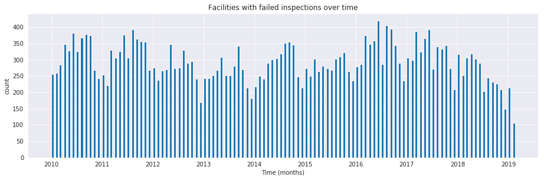
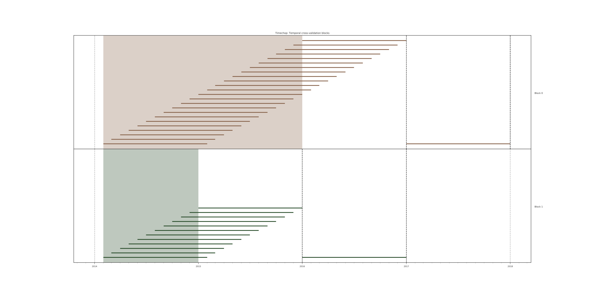

Welcome!
Welcome!
This tutorial will show you how to use triage, a data science modeling tool developed at the Center for Data Science and Public Policy (DSaPP) at the University of Chicago.
triage helps build models for three common applied problems: (a) Early warning systems (EWS or EIS), (b) resource prioritization (a.k.a "an inspections problem") and (c) interaction level predictions (a.k.a "appointment level"). These problems are difficult to model because their conceptualization and and implementation are prone to error, thanks to their multi-dimensional, multi-entity, time-series structure.
The last version of this tutorial is published in https://dssg.github.io/dirtyduck/
NOTE This tutorial is in sync with the latest version of triage. At this moment v3.3.0 (Arepa).
Before you start
What you need for this tutorial
Install Docker CE and Docker Compose. That's it. Follow the links for installation instructions.
Note that if you are using GNU/Linux you should add your user to the docker group following the instructions at this link.
At the moment only operative systems with *nix-type command lines are supported, such as GNU/Linux and MacOS. Recent versions of Windows may also work.
How to use this tutorial
First, clone this repository on your laptop
git clone https://github.com/dssg/dirtyduck.git
Second, run
./tutorial.sh start
This will take several minutes the first time you do it.
How you can help to improve this tutorial
If you want to contribute, please follow the suggestions in the README
Description of the problem
This tutorial aims to introduce the reader to triage, a machine learning modeling tool built by the Center for Data Science and Public Policy. We will use the well-known Chicago Food Inspections dataset.1
We will present the two problems that triage was built to model2:
Inspection Prioritization
In an ideal world, inspectors would frequently visit every food facility, every day5 to ensure it meets safety standards. But the real world doesn't have enough inspectors for that to happen, so the city needs to decide how to allocate its limited inspection workforce to find and remediate as many establishments with food hazards as possible. Assuming the city can inspect n facilities in the next X period of time, they can define the problem like this:
Which n facilities will have a food violation in the following X period of time?
If our inspection workforce is really limited, we should probably just target the most serious violations. Then we'd define the problem like this:
Which n facilities will have a critical or serious violation in the following X period of time?
Early Warning
Using the same data set, facility owners or managers would pose the ML problem as an early warning problem. They'd like to know whether an inspector is going to visit their facility so they can prepare for it. They can define the problem like this:
Will my facility be inspected in the next X period of time?
Note that in both cases, we are defining a period of time in which the event potentially will happen.
What do they have in common?
For either problem, X could be a day, a week, month, a quarter, a year, 56 days, or some other time period.
Without going into detail, both problems use data where each row describes an event in which an entity was involved, and each event has a specific outcome or result.
The entity for both inspection prioritizations and early warnings in this tutorial is a food facility, and the event is an inspection. But the outcome differs: for inspections the outcome is inspection failed or major violation found, while for early warning the outcome is inspected.
How do they differ?
Besides the obvious (i.e. the label), these ML's problem formulations have very different internal structure:
The EIS problem all the entities of interest in a given period of time have a label. The Inspections problem does not have that luxury: from all the existing entities of interest only a bunch are inspected that means that only those inspected have a label (True/False) but all the remaining ones doesn't have one. This will be reflected, for example in the training matrices: you only train in the facilities that were inspected (so you will have less rows in them). Another impact will be in the metrics: you need to be very careful about interpreting the metrics in an inspections problem. Finally, when you are designing the field validation of your model, you need to take in account this selection bias, if not, you will be inspecting the same facilities over and over6
Infrastructure
In every data science project you will need several tools to help analyze the data in an efficient7 manner. Examples include a place to store the data (a database management system or DBMS); a way to put your model to work, i.e. a way that allows the model to ingest new data and make predictions (an API); and a way to examine the performance of trained models (monitor tools).
This tutorial includes a script for managing the infrastructure8 in a transparent way.
The infrastructure of this tutorial has four pieces:
- a
postgresqldatabase calledfood_db, - a container that executes
triageexperiments (we will use this when trying to scale up), - a container for interacting with the data called
bastion.
bastion includes a postgresql client (so you can interact with the database)9 and a full python environment (so you can code or modify the things for the tutorial).
The only thing you need installed on your laptop is docker.
From your command line (terminal) run the following from the repo directory:
./tutorial.sh
Usage: ./tutorial.sh {start|stop|build|rebuild|run|logs|status|destroy|all|}
OPTIONS:
-h|help Show this message
start
stop
rebuild
status
destroy
-t|triage
-a|all
INFRASTRUCTURE:
Build the infrastructure:
$ ./tutorial.sh start
Check the status of the containers:
$ ./tutorial.sh status
Stop the tutorial's infrastructure:
$ ./tutorial.sh stop
Destroy all the resources related to the tutorial:
$ ./tutorial.sh destroy
View the infrastructure logs:
$ ./tutorial.sh -l
EXPERIMENTS:
NOTE:
The following commands assume that "sample_experiment_config.yaml"
is located inside the triage/experiments directory
Run one experiment:
$ ./tutorial.sh -t --config_file sample_experiment_config.yaml run
Run one experiment, do not replace existing matrices or models, and enable debug:
$ ./tutorial.sh -t --config_file sample_experiment_config.yaml --no-replace --debug run
Validate experiment configuration file:
$ ./tutorial.sh triage --config_file sample_experiment_config.yaml validate
Show the experiment's temporal cross-validation blocks:
$ ./tutorial.sh -t --config_file sample_experiment_config.yaml show-temporal-blocks
Plot model number 4 (for Decision Trees and Random Forests):
$ ./tutorial.sh -t --config_file sample_experiment_config.yaml show_model_plot --model 4
Triage help:
$ ./tutorial.sh triage --help
Following the instructions on the screen, we can start the infrastructure with:
./tutorial.sh start
You can check that everything is running smoothly with status
./tutorial.sh status
Name Command State Ports
------------------------------------------------------------------------
food_db docker-entrypoint.sh postgres Up 0.0.0.0:5434->5432/tcp
To access bastion, where the postgresql client is, type:
./tutorial.sh bastion
Your prompt should change to something like:
root@485373fb3c64:/$
NOTE: The number you see will be different (i.e. not 485373fb3c64).
Inside bastion, type the next command to connect to the database
psql ${DATABASE_URL}
The prompt will change again to (or something very similar):
psql (9.6.7, server 10.2 (Debian 10.2-1.pgdg90+1))
WARNING: psql major version 9.6, server major version 10.
Some psql features might not work.
Type "help" for help.
food=#
The previous command is using psql, a powerful command line client for the Postgresql database. If you want to use this client fully, check psql's documentation.
The database is running and it's named food. It should contain a single table named inspections in the schema raw. Let's check the structure of the inspections table. Type the following command:
\d raw.inspections
| Table "raw.inspections" | ||||
|---|---|---|---|---|
| Column | Type | Collation | Nullable | Default |
| inspection | character varying | not null | ||
| dbaname | character varying | |||
| akaname | character varying | |||
| licensenum | numeric | |||
| facilitytype | character varying | |||
| risk | character varying | |||
| address | character varying | |||
| city | character varying | |||
| state | character varying | |||
| zip | character varying | |||
| date | date | |||
| type | character varying | |||
| results | character varying | |||
| violations | character varying | |||
| latitude | numeric | |||
| longitude | numeric | |||
| location | character varying |
That's it. We will work from this table of raw data.
You can disconnect from the database typing \q. But don't leave the database yet! We still need to do a lot of things 10
Data preparation
We need to get the data and transform it into a shape that is suitable for the analysis.
NOTE: Unless we say otherwise, you should run all the following commands inside bastion.
Load the data
Before loading the data into the database, verify that the database table is empty:
select
count(*)
from
raw.inspections;
| count |
|---|
| 0 |
We will use some postgresql magic in order to get the data in our database. In particular we will use the powerful copy command and the City of Chicago's data API:
\copy raw.inspections from program 'curl "https://data.cityofchicago.org/api/views/4ijn-s7e5/rows.csv?accessType=DOWNLOAD"' HEADER CSV
Now, you should have some data:
select
to_char(count(*), '999,999') as "facilities inspected"
from
raw.inspections;
| facilities inspected |
|---|
| 182,419 |
You'll probably get a different number because the data are updated every day. Let's peek inside the table11
select
inspection,
dba_name,
risk,
results
from
raw.inspections limit 1;
| inspection | dbaname | risk | results |
|---|---|---|---|
| 2268241 | ANTOJITOS PUEBLITA INC | Risk 1 (High) | Pass w/ Conditions |
Ok, now you have some data loaded! But we still need to munge it to use it in our machine learning task.
Transforming (and cleaning) the data
Rationale
To tackle a Machine Learning problem, you need to identify the entities for your problem domain, and if your problem involves time, how those entities change, either what events happen to the entity or what events the entity effects.
We will encode this information in two tables, one named entities and the other events.
The entity, in this example, is the food facility, and the events are the inspections on the facility.
The entities table should contain a unique identifier for the entity and some data about that entity (like name, age, status). The events table will include data related to the inspection, including the two most important attributes: its spatial and temporal positions 12.
Before starting the cleaning, make your life easier by following this rule:
Do not change the original data
The reason is, if you make a mistake or want to try a different data transformation, you can always can go back to the raw data and start over.
Data road
The transformation "road" that we will take in this tutorial is as follows:
- Put a copy of the data in the
rawschema. (We just did that.) - Apply some simple transformations and store the resulting data in the
cleanedschema. - Organize the data in two unnormalized13 tables:
eventsandentitiesin thesemanticschema. - Run
triage. It will create several schemas (model_metadata,test_results,train_results).

Dataset documentation
The Chicago Food Inspection dataset has documentation here.
We can make sense there about the column's meaning, and the process that generates the data.
Most columns are self-explanatory, but some are not:14
- *Risk category of facility* (
risk):
Each establishment is categorized as to its risk of adversely affecting the public’s health, with 1 being the highest and 3 the lowest. The frequency of inspection is tied to this risk, with risk 1 establishments inspected most frequently and risk 3 least frequently.
- *Inspection type* (
type):
An inspection can be one of the following types: canvass, the most common type of inspection performed at a frequency relative to the risk of the establishment; consultation, when the inspection is done at the request of the owner prior to the opening of the establishment; complaint, when the inspection is done in response to a complaint against the establishment; license, when the inspection is done as a requirement for the establishment to receive its license to operate; suspect food poisoning, when the inspection is done in response to one or more persons claiming to have gotten ill as a result of eating at the establishment (a specific type of complaint-based inspection); task-force inspection, when an inspection of a bar or tavern is done. Re-inspections can occur for most types of these inspections and are indicated as such.
- *Results* (
results):
An inspection can pass, pass with conditions, or fail. Establishments receiving a ‘pass’ were found to have no critical or serious violations (violation number 1-14 and 15-29, respectively). Establishments receiving a ‘pass with conditions’ were found to have critical or serious violations, but these were corrected during the inspection. Establishments receiving a ‘fail’ were found to have critical or serious violations that were not correctable during the inspection. An establishment receiving a ‘fail’ does not necessarily mean the establishment’s licensed is suspended. Establishments found to be out of business or not located are indicated as such.
- *Violations* (
violations):
An establishment can receive one or more of 45 distinct violations (violation numbers 1-44 and 70). For each violation number listed for a given establishment, the requirement the establishment must meet in order for it to NOT receive a violation is noted, followed by a specific description of the findings that caused the violation to be issued.
We added emphasis to the last one.
From these definitions, we can infer the following:
- risk is related to the frequency of inspections of type canvass.
- consultation is an inspection before the facility opens (so we can remove it from the data). The same happens with license.
- complaint and suspected food poisoning are triggered by people.
- consultation is triggered by the owner of the facility.
- task-force occurs at bars or taverns.
- Critical violations are coded between
1-14, serious violations between15-29. We can assume that the violations code30and higher are minor violations. - violation describes the problems found, and the comment section describes the steps the facility should take to fix the problem.
- There are only three possible results of the inspection. (Also, an inspection may not happen if the facility was not located or went out of business).
- There can be several
violationsperinspection.
Reality check
It is important to verify that the documentation is correct. Let's start by checking that the risk column only has three classifications:
NOTE Execute this in psql inside the container bastion.
select
risk,
to_char(count(*), '999,999') as "number of inspections"
from
raw.inspections
group by
risk
order by
count(*) desc;
| risk | number of inspections |
|---|---|
| Risk 1 (High) | 129,667 |
| Risk 2 (Medium) | 36,286 |
| Risk 3 (Low) | 16,370 |
| ¤ | 71 |
| All | 25 |
Ok, there are two extra risk types, All and NULL, for a grand total of 5.
What about types of inspections?
select
count(distinct type) as "types of inspections"
from
raw.inspections;
| types of inspections |
|---|
| 108 |
Wow, there are 108 types of inspections instead of the expected 5!
What are those types? How bad is it?
select
type,
to_char(count(*), '999,999') as "number of inspections"
from
raw.inspections
group by
type
order by
count(*) desc
limit 10;
| type | number of inspections |
|---|---|
| Canvass | 96,561 |
| License | 23,785 |
| Canvass Re-Inspection | 18,922 |
| Complaint | 16,953 |
| License Re-Inspection | 8,411 |
| Complaint Re-Inspection | 6,911 |
| Short Form Complaint | 6,491 |
| Suspected Food Poisoning | 817 |
| Consultation | 671 |
| License-Task Force | 605 |
This column will require also cleaning.
Finally, let's look results (should be 3)
select
results,
to_char(count(*), '999,999') as "number of inspections"
from
raw.inspections
group by
results
order by
count(*) desc;
| results | number of inspections |
|---|---|
| Pass | 102,592 |
| Fail | 35,252 |
| Pass w/ Conditions | 21,401 |
| Out of Business | 15,973 |
| No Entry | 5,619 |
| Not Ready | 1,516 |
| Business Not Located | 66 |
Ok, disheartening. But that's the reality of real data. We'll try to clean this mess.
Cleaning
Let's look at the data to figure out how we need to transform it. We'll start with all the columns except violations. We'll deal with that one later because it's more complex.
First, we'll remove superfluous spaces; convert the columns type, results, dba_name, aka_name, facility_type, address, city to lower case; and clean risk, keeping only the description (e.g. high instead of Risk 1 (High)).
We still need to clean further the column type (which contains more values than the seven mentioned in the documentation: canvass, complaint, license, re-inspection, task-force, consultation, and suspected food poisoning). For simplicity, we will use regular expressions and ignore re-inspection.
For the column risk, we will impute as high all the NULL and All values15.
As we have seen (and will continue see) through this tutorial, real data are messy; for example, the column dba_name has several spellings for the same thing: SUBWAY and Subway, MCDONALDS and MC DONALD'S, DUNKIN DONUTS/BASKIN ROBBINS and DUNKIN DONUTS / BASKIN ROBBINS, etc.
We could use soundex or machine learning deduplication16 to clean these names, but we'll go with a very simple cleaning strategy: convert all the names to lowercase, remove the trailing spaces, remove the apostrophe, and remove the spaces around "/". It won't completely clean those names, but it's good enough for this example project.
Let's review the status of the spatial columns (state, city, zip, latitude, longitude). Beginning with state, all the facilities in the data should be located in Illinois:
select
state,
to_char(count(*), '999,999') as "number of inspections"
from
raw.inspections
group by
state;
| state | number of inspections |
|---|---|
| IL | 182,385 |
| ¤ | 34 |
Ok, almost correct, there are some NULL values. We will assume that the NULL values are actually IL (i.e. we will impute them). Moving to the next spatial column, we expect that all the values in the column city are Chicago:17
select
lower(city) as city,
to_char(count(*), '999,999') as "number of inspections"
from
raw.inspections
group by
lower(city)
order by
count(*) desc
limit 10;
| city | number of inspections |
|---|---|
| chicago | 182,011 |
| ¤ | 157 |
| cchicago | 44 |
| schaumburg | 23 |
| maywood | 16 |
| elk grove village | 13 |
| evanston | 10 |
| chestnut street | 9 |
| cicero | 9 |
| inactive | 8 |
Oh boy. There are 150-ish rows with NULL values and forty-ish rows with the value cchicago. Farther down the list (if you dare), we even have chicagochicago. All the values are near Chicago, even if they're in different counties, so we will ignore this column (or equivalently, we will assume that all the records are from Chicago).
Zip code has a similar NULL problem:
select
count(*) as "number of inspections w/o zip code"
from
raw.inspections
where
zip is null or btrim(zip) = '';
| number of inspections w/o zip code |
|---|
| 75 |
We could attempt to replace these NULL values using the location point or using similar names of restaurants, but for this tutorial we will remove them. Also, we will convert the coordinates latitude and longitude to a Postgres Point.18 , 19 , 20
We will drop the columns state, latitude, and longitude because the Point contains all that information. We also will remove the column city because almost everything happens in Chicago.
If you're keeping count, we are only keeping two columns related to the spatial location of the events: the location of the facility (location) and one related to inspection assignments (zip_code).
Each inspection can have multiple violations. To handle that as simply as possible, we'll put violations in their own table.
Finally, we will improve the names of the columns (e.g. results -> result, dba_name -> facility, etc).
We will create a new schema called cleaned. The objective of this schema is twofold: to keep our raw data as is 21 and to store our assumptions and cleaning decisions separate from the raw data in a schema that semantically transmits that "this is our cleaned data."
The cleaned schema will contain two tables: cleaned.inspections and cleaned.violations.
create schema if not exists cleaned;
Then, we will create our mini ETL with our cleaning decisions:
drop table if exists cleaned.inspections cascade;
create table cleaned.inspections as (
with cleaned as (
select
inspection::integer,
btrim(lower(results)) as result,
license_num::integer,
replace(regexp_replace(btrim(lower(dba_name)), '\s{2,}|,|\.',''), $$'$$,'') as facility,
replace(regexp_replace(btrim(lower(aka_name)), '\s{2,}|,|\.',''), $$'$$,'') as facility_aka,
case when
facility_type is null then 'unknown'
else btrim(lower(facility_type))
end as facility_type,
lower(substring(risk from '\((.+)\)')) as risk,
btrim(lower(address)) as address,
zip as zip_code,
substring(
btrim(lower(regexp_replace(type, 'liquor', 'task force', 'gi')))
from 'canvass|task force|complaint|food poisoning|consultation|license|tag removal') as type,
date,
-- point(longitude, latitude) as location
ST_SetSRID(ST_MakePoint(longitude, latitude), 4326)::geography as location -- We use geography so the measurements are in meters
from raw.inspections
where zip is not null -- removing NULL zip codes
)
select * from cleaned where type is not null
);
You could execute this code from the command line using psql:
psql ${DATABASE_URL} < /sql/create_cleaned_inspections_table.sql
Or if you're in psql:
\i /sql/create_cleaned_inspections_table.sql
The number of inspections now is:
select
to_char(count(inspection), '999,999,999') as "number of inspections"
from cleaned.inspections;
| number of inspections |
|---|
| 181,546 |
Note that quantity is smaller than the one from raw.inspections, since we throw away some inspections.
With the cleaned.inspections table created, let's take a closer look at the violations column to figure out how to clean it.
The first thing to note is that the column violation has a lot of information: it describes the code violation, what's required to address it (see Dataset documentation), and the inspector's comments. The comments are free text, which means that they can contain line breaks, mispellings, etc. In particular, note that pipes (|) seperate multiple violations.
The following sql code removes line breaks and multiple spaces and creates an array with all the violations for inspection number 2145736:
select
unnest(string_to_array(regexp_replace(violations, '[\n\r]+', ' ', 'g' ), '|')) as violations_array
from raw.inspections
where
inspection = '2145736';
| violationsarray |
|---|
| 32. FOOD AND NON-FOOD CONTACT SURFACES PROPERLY DESIGNED, CONSTRUCTED AND MAINTAINED - Comments: FIRST FLOOR GIRL'S WASHROOM,MIDDLE WASHBOWL SINK FAUCET NOT IN GOOD REPAIR, MUST REPAIR AND MAINTAIN. ONE OUT OF TWO HAND DRYER NOT WORKING IN THE FOLLOWING WASHROOM: FIRST FLOOR BOY'S AND GIRL'S WASHROOM, AND BOY'S AND GIRL'S WASHROOM 2ND FLOOR. MUST REPAIR AND MAINTAIN. |
| 34. FLOORS: CONSTRUCTED PER CODE, CLEANED, GOOD REPAIR, COVING INSTALLED, DUST-LESS CLEANING METHODS USED - Comments: DAMAGED FLOOR INSIDE THE BOY'S AND GIRL'S WASHROOM 2ND FLOOR. MUST REPAIR, MAKE THE FLOOR SMOOTH EASILY CLEANABLE. |
| 35. WALLS, CEILINGS, ATTACHED EQUIPMENT CONSTRUCTED PER CODE: GOOD REPAIR, SURFACES CLEAN AND DUST-LESS CLEANING METHODS - Comments: MISSING PART OF THE COVING(BASEBOARD) BY THE EXPOSED HAND SINK IN THE KITCHEN. MUST REPAIR AND MAINTAIN. WATER STAINED CEILING TILES IN THE LUNCH ROOM. MUST REPLACE CEILING TILES AND MAINTAIN. PEELING PAINT ON THE CEILING AND WALLS THROUGHOUT THE SCHOOL. HALLWAYS, INSIDE THE CLASSROOMS, INSIDE THE WASHROOMS IN ALL FLOORS. INSTRUCTED TO SCRAPE PEELING PAINT AND RE PAINT. |
This little piece of code is doing a lot: first it replaces all the line breaks [\n\r]+ with spaces, then, it splits the string using the pipe and stores it in an array (string_to_array), finally it returns every violation description in a row (unnest).
From this, we can learn that the structure of the violations column follows:
- If there are several violations reported, those violations will be separated by
'|' - Every violation begins with a code and a description
- Every violation can have comments, which appear after the string
- Comments:
We will create a new table called cleaned.violations to store
- inspection
- code
- description
- comments
drop table if exists cleaned.violations cascade;
create table cleaned.violations as (
select
inspection::integer,
license_num::integer,
date::date,
btrim(tuple[1]) as code,
lower(btrim(tuple[2])) as description,
lower(btrim(tuple[3])) as comment,
(case
when btrim(tuple[1]) = '' then NULL
when btrim(tuple[1])::int between 1 and 14 then 'critical' -- From the documentation
when btrim(tuple[1])::int between 15 and 29 then 'serious'
else 'minor'
end
) as severity from
(
select
inspection,
license_num,
date,
regexp_split_to_array( -- Create an array we will split the code, description, comment
regexp_split_to_table( -- Create a row per each comment we split by |
coalesce( -- If there isn't a violation add '- Comments:'
regexp_replace(violations, '[\n\r]+', '', 'g' ) -- Remove line breaks
, '- Comments:')
, '\|') -- Split the violations
, '(?<=\d+)\.\s*|\s*-\s*Comments:') -- Split each violation in three
-- , '\.\s*|\s*-\s*Comments:') -- Split each violation in three (Use this if your postgresql is kind off old
as tuple
from raw.inspections
where results in ('Fail', 'Pass', 'Pass w/ Conditions') and license_num is not null
) as t
);
This code is in /sql/create_violations_table.sql. You can execute it with psql's -f option, as before.
We can verify the result of the previous script
select
inspection, date, code, description
from cleaned.violations
where
inspection = 2145736
order by
code asc;
| inspection | date | code | description |
|---|---|---|---|
| 2145736 | 2018-03-01 | 32 | food and non-food contact surfaces properly designed, constructed and maintained |
| 2145736 | 2018-03-01 | 34 | floors: constructed per code, cleaned, good repair, coving installed, dust-less cleaning methods used |
| 2145736 | 2018-03-01 | 35 | walls, ceilings, attached equipment constructed per code: good repair, surfaces clean and dust-less cleaning methods |
If everything worked correctly you should be able to run the following code22:
select
case
when
grouping(severity) = 1 then 'TOTAL'
else
severity
end as severity,
to_char(count(*), '999,999,999') as "number of inspections"
from
cleaned.violations
group by
rollup (severity)
order by
severity nulls first;
| severity | number of inspections |
|---|---|
| ¤ | 26,039 |
| critical | 46,443 |
| minor | 465,535 |
| serious | 53,566 |
| TOTAL | 591,583 |
As a last step, we should create from the cleaned tables the entities and events tables.
Semantic tables
Entities table
The entities table should uniquely identify each facility and contain descriptive attributes. First, we should investigate how we can uniquely identify a facility. Let's hope it's easy23.
Let's start with the obvious option. Perhaps license_num is a unique identifier. Let's confirm our hypothesis with some queries.
We will begin with the following query: What are 5 licenses with the most inspections?
select
license_num,
to_char(count(*), '999,999,999') as "number of inspections",
coalesce(count(*) filter (where result = 'fail'), 0)
as "number of failed inspections"
from
cleaned.inspections
group by
license_num
order by
count(*) desc
limit 5;
| licensenum | number of inspections | number of failed inspections |
|---|---|---|
| 0 | 454 | 114 |
| 1354323 | 192 | 1 |
| 14616 | 174 | 31 |
| 1574001 | 82 | 4 |
| 1974745 | 59 | 3 |
This looks weird. There are three license numbers, in particular license number 0, that have many more inspections than the rest. Let's investigate license_num = 0.
select
facility_type,
count(*) as "number of inspections",
coalesce(count(*) filter (where result = 'fail'), 0) as "number of failed inspections"
from
cleaned.inspections
where
license_num=0
group by
facility_type
order by
"number of inspections" desc
limit 10;
| facilitytype | number of inspections | number of failed inspections |
|---|---|---|
| restaurant | 104 | 44 |
| special event | 73 | 9 |
| unknown | 44 | 10 |
| shelter | 31 | 6 |
| navy pier kiosk | 30 | 4 |
| church | 30 | 3 |
| grocery store | 16 | 7 |
| school | 13 | 1 |
| long term care | 11 | 2 |
| church kitchen | 11 | 4 |
It seems that license_number 0 is a generic placeholder: Most of these are related to special events, churches, festivals, etc. But what about the restaurants that have license_num = 0? Are those the same restaurant?
select
license_num,
facility,
address,
count(*) as "number of inspections",
coalesce(count(*) filter (where result = 'fail'), 0)
as "number of failed inspections"
from
cleaned.inspections
where
license_num = 0
and
facility_type = 'restaurant'
group by
license_num, facility, address
order by
"number of inspections" desc
limit 10;
| licensenum | facility | address | number of inspections | number of failed inspections |
|---|---|---|---|---|
| 0 | british airways | 11601 w touhy ave | 5 | 1 |
| 0 | rib lady 2 | 4203 w cermak rd | 4 | 3 |
| 0 | taqueria la capital | 3508 w 63rd st | 3 | 1 |
| 0 | nutricion familiar | 3000 w 59th st | 3 | 1 |
| 0 | salvation army | 506 n des plaines st | 3 | 1 |
| 0 | herbalife | 6214 w diversey ave | 3 | 2 |
| 0 | la michoacana | 4346 s california ave | 3 | 1 |
| 0 | las quecas | 2500 s christiana ave | 3 | 1 |
| 0 | mrs ts southern fried chicken | 3343 n broadway | 3 | 1 |
| 0 | unlicensed | 7559 n ridge blvd | 3 | 1 |
Nope. Unfortunately, license_num is not a unique identifier.
Perhaps license_num and address are a unique identifier.
select
to_char(count(distinct license_num), '999,999') as "number of licenses",
to_char(count(distinct facility), '999,999') as "number of facilities",
to_char(count(distinct address), '999,999') as "number of addresses"
from cleaned.inspections;
| number of licenses | number of facilities | number of addresses |
|---|---|---|
| 35,546 | 25,917 | 17,515 |
We were expecting (naively) that we should get one license_num per facility per address, but that isn't the case. Perhaps several facilities share a name (e.g. "Subway" or "McDonalds") or license, or perhaps several facilities share the same address, such as facilities at the stadium or the airport.
We will try to use the combination of license_num, facility, facility_aka, facility_type, and address to identify a facility:
select
license_num, facility, facility_type, facility_aka, address , count(*) as "number of inspections"
from
cleaned.inspections
group by
license_num, facility, facility_type, facility_aka, address
order by
count(*) desc, facility, facility_aka, address, license_num, facility_type
limit 10;
| licensenum | facility | facilitytype | facilityaka | address | number of inspections |
|---|---|---|---|---|---|
| 1142451 | jewel foodstore # 3345 | grocery store | jewel foodstore # 3345 | 1224 s wabash ave | 46 |
| 1490035 | mcdonalds | restaurant | mcdonalds | 6900 s lafayette ave | 46 |
| 1596210 | food 4 less midwest #552 | grocery store | food 4 less | 7030 s ashland ave | 45 |
| 2083833 | marianos fresh market #8503 | grocery store | marianos fresh market | 333 e benton pl | 45 |
| 60184 | taqueria el ranchito | restaurant | taqueria el ranchito | 2829 n milwaukee ave | 42 |
| 1476553 | petes produce | grocery store | petes produce | 1543 e 87th st | 41 |
| 1000572 | jewel food store #3030 | grocery store | jewel food store #3030 | 7530 s stony island ave | 40 |
| 1302136 | mcdonalds | restaurant | mcdonalds | 70 e garfield blvd | 40 |
| 1094 | one stop food & liquor store | grocery store | one stop food & liquor store | 4301-4323 s lake park ave | 40 |
| 2108657 | morrisons restaurant | restaurant | morrisons restaurant | 8127 s ashland ave | 38 |
Yay, it looks like these columns enable us to identify a facility!24
The entities table should store two other types of attributes. The first type describe the entity no matter the time. If the entity were a person, date of birth would be an example but age would not because the latter changes but the former does not. We'll include zip_code and location as two facility attributes.
The second type describes when the entity is available for action (e.g. inspection). In this case, the columns start_time, end_time describe the interval in which the facility is in business or active. These columns are important because we don't want to make predictions for inactive entities.
The data don't contain active/inactive date columns, so we will use the date of the facility's first inspection as start_time, and either NULL or the date of inspection if the result was out of business or business not located as end_time.
create schema if not exists semantic;
drop table if exists semantic.entities cascade;
create table semantic.entities as (
with entities as (
select
distinct on (
license_num,
facility,
facility_aka,
facility_type,
address
)
license_num,
facility,
facility_aka,
facility_type,
address,
zip_code,
location,
min(date) over (partition by license_num, facility, facility_aka, facility_type, address) as start_time,
max(case when result in ('out of business', 'business not located')
then date
else NULL
end)
over (partition by license_num, facility, facility_aka, address) as end_time
from cleaned.inspections
order by
license_num asc, facility asc, facility_aka asc, facility_type asc, address asc,
date asc -- IMPORTANT!!
)
select
row_number() over (order by start_time asc, license_num asc, facility asc, facility_aka asc, facility_type asc, address asc ) as entity_id,
license_num,
facility,
facility_aka,
facility_type,
address,
zip_code,
location,
start_time,
end_time,
daterange(start_time, end_time) as activity_period
from entities
);
Note that we added a unique identifier (entity_id) to this table. This identifier was assigned using a PostgreSQL idiom: distinct on(). DISTINCT ON keeps the "first" row of each group. If you are interested in this powerful technique see this blogpost.
select
to_char(count(entity_id), '999,999') as entities
from
semantic.entities;
| entities |
|---|
| 36,910 |
We will add some indexes to this table25:
create index entities_ix on semantic.entities (entity_id);
create index entities_license_num_ix on semantic.entities (license_num);
create index entities_facility_ix on semantic.entities (facility);
create index entities_facility_type_ix on semantic.entities (facility_type);
create index entities_zip_code_ix on semantic.entities (zip_code);
-- Spatial index
create index entities_location_gix on semantic.entities using gist (location);
create index entities_full_key_ix on semantic.entities (license_num, facility, facility_aka, facility_type, address);
Events table
We are ready to create the events table. This table will describe the inspection, like the type of inspection, when and where the inspection happened, and the inspection result. We will add the violations as a JSONB column.26 Finally, we'll rename inspection as event_id.27
drop table if exists semantic.events cascade;
create table semantic.events as (
with entities as (
select * from semantic.entities
),
inspections as (
select
i.inspection, i.type, i.date, i.risk, i.result,
i.license_num, i.facility, i.facility_aka,
i.facility_type, i.address, i.zip_code, i.location,
jsonb_agg(
jsonb_build_object(
'code', v.code,
'severity', v.severity,
'description', v.description,
'comment', v.comment
)
order by code
) as violations
from
cleaned.inspections as i
inner join
cleaned.violations as v
on i.inspection = v.inspection
group by
i.inspection, i.type, i.license_num, i.facility,
i.facility_aka, i.facility_type, i.address, i.zip_code, i.location,
i.date, i.risk, i.result
)
select
i.inspection as event_id,
e.entity_id, i.type, i.date, i.risk, i.result,
e.facility_type, e.zip_code, e.location,
i.violations
from
entities as e
inner join
inspections as i
using (license_num, facility, facility_aka, facility_type, address, zip_code)
);
-- Add some indices
create index events_entity_ix on semantic.events (entity_id asc nulls last);
create index events_event_ix on semantic.events (event_id asc nulls last);
create index events_type_ix on semantic.events (type);
create index events_date_ix on semantic.events(date asc nulls last);
create index events_facility_type_ix on semantic.events (facility_type);
create index events_zip_code_ix on semantic.events (zip_code);
-- Spatial index
create index events_location_gix on semantic.events using gist (location);
-- JSONB indices
create index events_violations on semantic.events using gin(violations);
create index events_violations_json_path on semantic.events using gin(violations jsonb_path_ops);
create index events_event_entity_zip_code_date on semantic.events (event_id asc nulls last, entity_id asc nulls last, zip_code, date desc nulls last);
Success! We have one row per event.28 Our semantic data looks like:
select
event_id,
entity_id,
type,
date,
risk,
result,
facility_type,
zip_code
from
semantic.events limit 1;
| eventid | entityid | type | date | risk | result | facilitytype | zipcode |
|---|---|---|---|---|---|---|---|
| 1343315 | 22053 | canvass | 2013-06-06 | low | fail | newsstand | 60623 |
We omitted violations and location for brevity. The total number of inspections is
select
to_char(count(event_id), '999,999,999') as events
from semantic.events;
| events |
|---|
| 156,682 |
Now that we have our data in a good shape, we are ready to use Triage.
Let's EDA …
It is always a good idea to do some Exploratory Data Analysis29 or EDA for short. This will help us to learn more about the dynamics of the entities or the inspections.
We will generate a few plots, just to know:
- how many entities/events are every month?
- how many entities/events ended in a failed state every month? and,
- how many entities/events have in a critical violation in a failed inspection?
Inspections over time
First, we will try the answer the question: how many inspections are realized every month?

Number of facilities inspected over time
The previous plot was about the number of events every month, now we will plot how many entities are acted every month.
One question, that is useful to answer is: Are there facilities that are inspected more than once in a month?
We are doing an emphasis in inspected since our data set doesn't contain all the facilities in Chicago. This will have an effect on the modeling stage.

Number of failed inspections over time
What is the proportion of inspections every month that actually end in a failed inspection?

Number of facilities with failed inspections over time
Now let's see the behavior of the outcomes of the inspection across time. First just if the inspection failed.

Number of severe violations found in a failed inspection over time
Finally let's analyze the evolution of failed inspections with severe violations (violation code in 15-29)

Number of facilities with severe violations found in a failed inspection over time

This few plots give us a sense of how the data behaves and will help us in detect weird bugs or model-behavior later.
Triage
Predictive analytics projects require coordinating many tasks, such as feature generation, classifier training, evaluation, and list generation. Each of these tasks is complicated in its own right, but it also needs to be combined with the other tasks throughout the course of the project.
DSaPP built triage to facilitate the creation of supervised learning models, in particular binary classification models with a strong temporal component in the data.
The dataset's temporal component mainly affects two modeling steps: feature creation (you need to be careful to avoid leaking information from the future through your features) and hyperparameter selection. triage solves both by splitting the data into temporal blocks and automating temporal cross-validation (TCC) and the feature generation.
triage uses the concept of an experiment. An experiment consists of a series of steps that aim to generate a good model for predicting the label of an entity in the data set. The steps are data time-splitting, label generation, feature generation, matrix creation, model training, predictions, and model evaluation. In each of these steps, triage will handle the temporal nuances of the data.
Nowadays triage will help you to select the best model (model selection) and it allows you to explore and understand the behavior of your models using post-modeling techniques.
You need to specify (via a configuration file) how you want to split your data temporally, which combination of machine learning algorithms and their hyperparameters you'd like to use, which kinds of features you want to generate, which subsets of those features you want to try in each model, and which metrics you'd like to use to evaluate performance and provide some criteria to select the best model.
An experiment run consists in fitting every combination of algorithm, hyperparameters, and feature subsets to the temporally split data and evaluating their predictive performance on future data splits using the user's metrics.
triage calls a unique combination of algorithm, hyperparameters, and feature subsets a model_group and a model group fit to a specific data matrix a model. Our data typically span multiple time periods, so triage fits multiple models for each model group.
triage is simple to use, but it contains a lot of complex concepts that we will try to clarify in this section. First we will explain how to run triage, and then we will create a toy experiment that helps explain triage's main concepts.
Triage interface
To run a triage experiment, you need the following:
-
A database with the data that you want to model.
- In this tutorial, the credentials are part of the
DATABASE_URLenvironment variable
- In this tutorial, the credentials are part of the
-
triageinstalled in your environment. You can verify thattriageis indeed installed if you type inbastion:
triage -h
- An experiment config file. This is where the magic happens. We will discuss this file at length in this section of the tutorial.
We are providing a docker container, bastion, that executes triage experiments. You already had the database (you were working on it the last two sections of this tutorial, remember?). So, like a real project, you just need to worry about the experiment configuration file.
In the following section of the tutorial we will use a small experiment configuration file located at <../triage/experiments/simple_test_skeleton.yaml>.
We will show you how to setup the experiment while explaining the inner workings of triage. We will modify the configuration file to show the effects of the configuration parameters. If you want to follow along, we suggest you copy that file and modify by yourself.
You can run that experiment with:
# Remember to run this in bastion NOT in your laptop! triage experiment --matrix-format hdf experiments/simple_test_skeleton.yaml
Every time you modify the configuration file and see the effects, you should execute the experiment again using the previous command.
A simple triage experiment
A brief recap of Machine Learning
Triage helps you to run a Machine learning experiment. An experiment in this context means the use of Machine Learning to explore a dynamic system in order to do some predictions about it.
Before execute the any ML experiment, you need to define some boundaries:
- Which are the entities that you want to study?
- What will you want to know about them?
In DSaPP, we build ML systems that aim to have social impact, i.e. help government offices, NGOs or other agents to do their job better. "Do their job better" means increase their reach (e.g. identify correctly more entities with some characteristics) using more efficiently their (scarce) resources (e.g. inspectors, medics, money, etc).
With this optic, the boundaries are:
- Cohort: Which are the entities that you want to reach?
- Label: What will you want to know about them?
- Label timespan: In what time period?
- Update frequency: How frequently do you want to intervene?
- List size: How many resources do you have to intervene?
Triage's experiment configuration file structures this information.
Cohorts, labels, event dates and as of dates
We will use the inspections prioritization as a narrative to help clarify these concepts:
- Which are the entities that you want to reach?: Active facilities, i.e. facilities that exists at the day of the planning inspections. We don't want to waste city resources (inspectors time) going to facilities that are out of business.
- What will you want to know about them?: Will those facilities fail the inspection?
- In what time period?: Will those facilities fail the inspection in the following month?
- How frequently do you want to intervene?: Every month.
- How many resources do you have to intervene?: We only have one inspector, so, one inspection per month
To exemplify and explain the inner workings of triage in this scenario, we will use a subset of the semantic.events table with the following facilities (i.e. imagine that Chicago only has this three facilities):
select
entity_id,
license_num,
facility_aka,
facility_type,
activity_period
from
semantic.entities
where
license_num in (1596210, 1874347, 1142451)
order by
entity_id asc;
| entityid | licensenum | facilityaka | facilitytype | activityperiod |
|---|---|---|---|---|
| 229 | 1596210 | food 4 less | grocery store | [2010-01-08,) |
| 355 | 1874347 | mcdonalds | restaurant | [2010-01-12,2017-11-09) |
| 840 | 1142451 | jewel foodstore # 3345 | grocery store | [2010-01-26,) |
The first thing triage does when executes the experiment, is split the time that the data covers in blocks considering the time horizon for the label ( Which facilities will fail an inspection in the following month? in this scenario of inspection prioritization30) . This time horizon is calculated from a set of specific dates (as_of_date in triage parlance) that divide the blocks in past (for training the model) and future (for testing the model). The set of as_of_dates is (mainly) calculated from the label timespan and the update frequency31. The as of date is not the event date. The event date occurred when the facility was inspected. The as of date is when the planning of the future facilities to be inspected happens.
triage will create those labels using information about the outcome of the event32, taking into account the temporal structure of the data. In our example: if a facility is inspected is an event, and whether it fails the inspection (outcome true) or not (outcome false).
For a given entity on a given as of date, triage asks whether there's an outcome in the future time horizon. If so, triage will generate a label for that specific entity on that as of date.
For this example, the label will be if given an as of date (e.g. January first, 2014), the facility will have a failed inspection in the following year.
The following example hopefully will clarify the difference between outcome and label. We will focus on events (inspections) that happened in the year of 2014.
select
date,
entity_id,
(result = 'fail') as outcome
from
semantic.events
where
'[2014-01-01, 2015-01-01]'::daterange @> date
and
entity_id in (229,355,840)
order by
date asc;
| date | entityid | outcome |
|---|---|---|
| 2014-01-14 | 840 | f |
| 2014-02-04 | 229 | f |
| 2014-02-24 | 840 | t |
| 2014-03-05 | 840 | f |
| 2014-04-10 | 355 | t |
| 2014-04-15 | 229 | f |
| 2014-04-18 | 355 | f |
| 2014-05-06 | 840 | f |
| 2014-08-28 | 355 | f |
| 2014-09-19 | 229 | f |
| 2014-09-30 | 355 | t |
| 2014-10-10 | 355 | f |
| 2014-10-31 | 840 | f |
We can observe that the facilities had several inspections, but in that timeframe 362 y 859 had failed inspections.
Continuing the narrative, from the perspective of the day of 2014-01-01 (as of date), those facilities will have positive label.
We can express that in a query and getting the labels for that as of date :
select
'2014-01-01' as as_of_date,
entity_id,
bool_or(result = 'fail')::integer as label
from
semantic.events
where
'2014-01-01'::timestamp <= date
and date < '2014-01-01'::timestamp + interval '1 year'
and entity_id in (229,355,840)
group by
entity_id;
| asofdate | entityid | label |
|---|---|---|
| 2014-01-01 | 229 | 0 |
| 2014-01-01 | 355 | 1 |
| 2014-01-01 | 840 | 1 |
Note that ee transform the label to integer, since the machine learning algorithms only work with numeric data.
We also need a way to store the state of each entity. We can group entities in cohorts defined by the state. The cohort can be used to decide which facilities you want to predict on (i.e. include in the ML train/test matrices). The rationale of this comes from the need to only predict for entities in a particular state: Is the restaurant new? Is this facility on this zip code? Is the facility "active"?33
We will consider a facility as active if a given as of date is in the interval defined by the start_date and end_date.
select
'2018-01-01'::date as as_of_date,
entity_id,
activity_period,
case when
activity_period @> '2018-01-01'::date -- 2018-01-01 is as of date
then 'active'::text
else 'inactive'::text
end as state
from
semantic.entities
where
entity_id in (229,355,840);
| asofdate | entityid | activityperiod | state |
|---|---|---|---|
| 2018-01-01 | 229 | [2010-01-08,) | active |
| 2018-01-01 | 355 | [2010-01-12,2017-11-09) | inactive |
| 2018-01-01 | 840 | [2010-01-26,) | active |
Triage will use a simple modification of the queries that we just discussed for automate the generation of the cohorts and labels for our experiment.
Experiment configuration file
The experiment configuration file is used to create the experiment object. Here, you will specify the temporal configuration, the features to be generated, the labels to learn, and the models that you want to train in your data.
The configuration file is a yaml file with the following main sections:
-
temporal_config: Temporal specification of the data, used for creating the blocks for temporal crossvalidation. -
cohort_config: Using the state of the entities, define (usingsql) cohorts to filter out objects that shouldn't be included in the training and prediction stages. This will generate a table callcohort_{experiment_hash} -
label_config: Specify (usingsql) how to generate labels from the event's outcome. A table namedlabels_{experiment_hash}will be created. -
feature_aggregation: Which spatio-temporal aggregations of the columns in the data set do you want to generate as features for the models? -
model_group_keys: How do you want to identify themodel_groupin the database (so you can run analysis on them)? -
grid_config: Which combination of hyperparameters and algorithms will be trained and evaluated in the data set? -
scoring: Which metrics will be calculated?
Two of the more important (and potentially confusing) sections are temporal_config and feature_generation. We will explain them in detail in the next sections.
Temporal crossvalidation
Cross validation is a common technique to select a model that generalizes well to new data. Standard cross validation randomly splits the training data into subsets, fits models on all but one, and calculates the metric of interest (e.g. precision/recall) on the one left out, rotating through the subsets and leaving each out once. You select the model that performed best across the left-out sets, and then retrain it on the complete training data.
Unfortunately, standard cross validation is inappropriate for most real-world data science problems. If your data have temporal correlations, standard cross validation lets the model peek into the future, training on some future observations and testing on past observations. To avoid this problem, you should design your training and testing to mimic how your model will be used, making predictions only using the data that would be available at that time (i.e. from the past).
In temporal crossvalidation, rather than randomly splitting the dataset into training and test splits, temporal cross validation splits the data by time.
triage uses the timechop library for this purpose. Timechop will "chop" the data set in several temporal blocks. These blocks are then used for creating the features and matrices for training and evaluation of the machine learning models.
Assume we want to select which restaurant (of two in our example dataset) we should inspect next year based on its higher risk of violating some condition. Also assume that the process of picking which facility is repeated every year on January 1st34
Following the problem description template given in Section Description of the problem to solve, the question that we'll attempt to answer is:
Which facility ( n=1 ) is likely to violate some inspected condition in the following year ( X=1 )?
The traditional approach in machine learning is splitting the data in training and test datasets. Train or fit the algorithm on the training data set to generate a train model and test or evaluate the model on the test data set. We will do the same here, but, with the help of timechop we will take in account the time:
We will fit models on training set up to 2014-01-01 and see how well those models would have predicted 2015; fit more models on training set up to 2015-01-01 and see how well those models would have predicted 2016; and so on. That way, we choose models that have historically performed best at our task, forecasting. It’s why this approach is sometimes called evaluation on a rolling forecast origin because the origin at which the prediction is made rolls forward in time. 35

The data at which the model will do the predictions is denominated as as of date in triage (as of date = January first in our example). The length of the prediction time window (1 year) is called label span. Training and predicting with a new model as of date (every year) is the model update frequency.
Because it's inefficient to calculate by hand all the as of dates or prediction points, timechop will take care of that for us. To do so, we need to specify some more constraints besides the label span and the model update frequency:
- What is the date range covered by our data?
- What is the date range in which we have information about labels?
- How frequently do you receive information about your entities?
- How far in the future you want to predict?
- How much of the past data do you want to use?
With this information, timechop will calculate as-of train and test dates from the last date in which you have label data, using the label span in both test and train sets, plus the constraints just mentioned.
In total timechop uses 11 configuration parameters36.
-
There are parameters related to the boundaries of the available data set:
feature_start_time: data aggregated into features begins at this point (earliest date included in features)feature_end_time: data aggregated into features is from before this point (latest date included in features)label_start_time: data aggregated into labels begins at this point (earliest event date included in any label (event date >= labelstarttime)label_end_time: data aggregated is from before this point (event date < labelendtime to be included in any label)
-
Parameters that control the labels' time horizon on the train and test sets:
-
training_label_timespans: how much time is covered by training labels (e.g., outcomes in the next 3 days? 2 months? 1 year?) (training prediction span) -
test_label_timespans: how much time is covered by test prediction (e.g., outcomes in the next 3 days? 2 months? 1 year?) (test prediction span)
These parameters will be used with the outcomes table to generate the labels. In an early warning setting, they will often have the same value. For inspections prioritization, this value typically equals
test_durationsandmodel_update_frequency. -
-
Parameters related about how much data we want to use, both in the future and in the past relative to the as-of date:
-
test_durations: how far into the future should a model be used to make predictions (test span)NOTE: in the typical case of wanting a single prediction set immediately after model training, this should be set to 0 days
For early warning problems,
test_durationsshould equalmodel_update_frequency. For inspection prioritization, organizational process determines the value: how far out are you scheduling for?The equivalent of
test_durationsfor the training matrices ismax_training_histories:max_training_histories: the maximum amount of history for each entity to train on (early matrices may contain less than this time if it goes past label/feature start times). If patterns have changed significantly, models trained on recent data may outperform models trained on a much lengthier history.
-
-
Finally, we should specify how many rows per
entity_idin the train and test matrix:-
training_as_of_date_frequencies: how much time between rows for a single entity in a training matrix (list time between rows for same entity in train matrix). -
test_as_of_date_frequencies: how much time between rows for a single entity in a test matrix (time between rows for same entity in test matrix).
-
The following images (we will show how to generate them later) shows the time blocks created by several temporal configurations. We will change a parameter at a time so you could see how it affects the resulting blocks.
If you want to try the modifications (or your own) and generate the temporal blocks images run the following (they'll be generated in <./images/>):
# Remember to run this in bastion NOT in laptop's shell! triage experiment experiments/simple_test_skeleton.yaml --show-timechop
-
{feature, label}_{end, start}_timeThe image below shows these
{feature, label}_start_timeare equal, as are the{feature, label}_end_time. These parameters show in the image as dashed vertical black lines. This setup will be our baseline example.The plot is divided in two horizontal lines ("Block 0" and "Block 1"). Each line is divided by vertical dashed lines – the grey lines outline the boundaries of the data for features and data for labels, which in this image coincide. The black dash lines represent the beginning and the end of the test set. In "Block 0" those lines correspond to
2017and2018, and in "Block 1" they correspond to2016and2017.
The shaded areas (in this image there is just one per block, but you will see other examples below) represents the span of the as of dates. They start with the oldest as of date and end with the latest. Each line inside that area represents the label span. Those lines begin at the as of date. At each as of date, timechop generates each entity's features (from the past) and labels (from the future). So in the image, we will have two sets of train/test datasets. Each facility will have 13 rows in "Block 0" and 12 rows in "Block 1". The trained models will predict the label using the features calculated for that test set as of date. The single line represents the label's time horizon in testing.
This is the temporal configuration that generated the previous image:
temporal_config: feature_start_time: '2014-01-01' feature_end_time: '2018-01-01' label_start_time: '2014-01-02' label_end_time: '2018-01-01' model_update_frequency: '1y' training_label_timespans: ['1y'] training_as_of_date_frequencies: '1month' test_durations: '0d' test_label_timespans: ['1y'] test_as_of_date_frequencies: '1month' max_training_histories: '1y'In that configuration the date ranges of features and labels are equal, but they can be different (maybe you have more data for features that data for labels) as is shown in the following image and in their configuration parameters.

temporal_config: feature_start_time: '2010-01-01' # <------- The change happened here! feature_end_time: '2018-01-01' label_start_time: '2014-01-02' label_end_time: '2018-01-01' model_update_frequency: '1y' training_label_timespans: ['1y'] training_as_of_date_frequencies: '1month' test_durations: '0d' test_label_timespans: ['1y'] test_as_of_date_frequencies: '1month' max_training_histories: '1y' -
model_update_frequencyFrom our baseline
temporal_configexample (302), we will change how often we want a new model, which generates more time blocks (if there are time-constrained data, obviously).temporal_config: feature_start_time: '2014-01-01' feature_end_time: '2018-01-01' label_start_time: '2014-01-02' label_end_time: '2018-01-01' model_update_frequency: '6month' # <------- The change happened here! training_label_timespans: ['1y'] training_as_of_date_frequencies: '1month' test_durations: '0d' test_label_timespans: ['1y'] test_as_of_date_frequencies: '1month' max_training_histories: '1y' (The number of blocks grew)")
-
max_training_historiesWith this parameter you could get a growing window for training (depicted in 310) or as in all the other examples, fixed training windows.
temporal_config: feature_start_time: '2014-01-01' feature_end_time: '2018-01-01' label_start_time: '2014-01-02' label_end_time: '2018-01-01' model_update_frequency: '1y' training_label_timespans: ['1y'] training_as_of_date_frequencies: '1month' test_durations: '0d' test_label_timespans: ['1y'] test_as_of_date_frequencies: '1month' max_training_histories: '10y' # <------- The change happened here!
-
_as_of_date_frequenciesandtest_durationstemporal_config: feature_start_time: '2014-01-01' feature_end_time: '2018-01-01' label_start_time: '2014-01-02' label_end_time: '2018-01-01' model_update_frequency: '1y' training_label_timespans: ['1y'] training_as_of_date_frequencies: '3month' # <------- The change happened here! test_durations: '0d' test_label_timespans: ['1y'] test_as_of_date_frequencies: '1month' max_training_histories: '10y'
Now, change
test_as_of_date_frequencies:temporal_config: feature_start_time: '2014-01-01' feature_end_time: '2018-01-01' label_start_time: '2014-01-02' label_end_time: '2018-01-01' model_update_frequency: '1y' training_label_timespans: ['1y'] training_as_of_date_frequencies: '1month' test_durations: '0d' test_label_timespans: ['1y'] test_as_of_date_frequencies: '3month'<------- The change happened here! max_training_histories: '10y'
Nothing changed because the test set doesn't have "space" to allow more spans. The "space" is controlled by
test_durations, so let's change it to6month:temporal_config: feature_start_time: '2014-01-01' feature_end_time: '2018-01-01' label_start_time: '2014-01-02' label_end_time: '2018-01-01' model_update_frequency: '1y' training_label_timespans: ['1y'] training_as_of_date_frequencies: '1month' test_durations: '6month' <------- The change happened here! test_label_timespans: ['1y'] test_as_of_date_frequencies: '1month' max_training_histories: '10y'")
So, now we will move both parameters:
test_durations,test_as_of_date_frequenciestemporal_config: feature_start_time: '2014-01-01' feature_end_time: '2018-01-01' label_start_time: '2014-01-02' label_end_time: '2018-01-01' model_update_frequency: '1y' training_label_timespans: ['1y'] training_as_of_date_frequencies: '1month' test_durations: '6month' <------- The change happened here! test_label_timespans: ['1y'] test_as_of_date_frequencies: '3month' <------- and also here! max_training_histories: '10y'
-
_label_timespanstemporal_config: feature_start_time: '2014-01-01' feature_end_time: '2018-01-01' label_start_time: '2014-01-02' label_end_time: '2018-01-01' model_update_frequency: '1y' training_label_timespans: ['1y'] training_as_of_date_frequencies: '1month' test_durations: '0d' test_label_timespans: ['3month'] <------- The change happened here! test_as_of_date_frequencies: '1month' max_training_histories: '10y'
temporal_config: feature_start_time: '2014-01-01' feature_end_time: '2018-01-01' label_start_time: '2014-01-02' label_end_time: '2018-01-01' model_update_frequency: '1y' training_label_timespans: ['3month'] <------- The change happened here! training_as_of_date_frequencies: '1month' test_durations: '0d' test_label_timespans: ['1y'] test_as_of_date_frequencies: '1month' max_training_histories: '10y'
That's it! Now you have the power to bend time!37
With the time blocks defined,
triagewill create the labels and then the features for our train and test sets. We will discuss features in the following section.
Feature engineering
We will show how to create features using the experiments config file. triage uses collate for this.38 The collate library controls the generation of features (including the imputation rules for each feature generated) using the time blocks generated by timechop. Collate helps the modeler create features based on spatio-temporal aggregations into the as of date. Collate generates SQL queries that will create features per each as of date.
As before, we will try to mimic what triage does behind the scenario. Collate will help you to create features based on the following template:
For a given as of date, how the aggregation function operates into a column taking into account a previous time interval and some attributes.
Two possible features could be framed as:
As of 2016-01-01, how many inspections has each facility had in the previous 6 months?
and
As of 2016-01-01, how many "high risk" findings has the facility had in the previous 6 months?
In our data, that date range (between 2016-01-01 and 2015-07-01) looks like:
select
event_id,
date,
entity_id,
risk
from
semantic.events
where
date <@ daterange(('2016-01-01'::date - interval '6 months')::date, '2016-01-01')
and entity_id in (229,355,840)
order by
date asc;
| eventid | date | entityid | risk |
|---|---|---|---|
| 1561324 | 2015-07-17 | 840 | high |
| 1561517 | 2015-07-24 | 840 | high |
| 1562122 | 2015-08-12 | 840 | high |
| 1547403 | 2015-08-20 | 229 | high |
| 1547420 | 2015-08-28 | 229 | high |
| 1547448 | 2015-09-14 | 355 | medium |
| 1547462 | 2015-09-21 | 355 | medium |
| 1547504 | 2015-10-09 | 355 | medium |
| 1547515 | 2015-10-16 | 355 | medium |
| 1583249 | 2015-10-21 | 840 | high |
| 1583577 | 2015-10-28 | 840 | high |
| 1583932 | 2015-11-04 | 840 | high |
We can transform those data to two features: number_of_inspections and flagged_as_high_risk:
select
entity_id,
'2016-01-01' as as_of_date,
count(event_id) as inspections,
count(event_id) filter (where risk='high') as flagged_as_high_risk
from
semantic.events
where
date <@ daterange(('2016-01-01'::date - interval '6 months')::date, '2016-01-01')
and entity_id in (229,355,840)
group by
grouping sets(entity_id);
| entityid | asofdate | inspections | flaggedashighrisk |
|---|---|---|---|
| 229 | 2016-01-01 | 2 | 2 |
| 355 | 2016-01-01 | 4 | 0 |
| 840 | 2016-01-01 | 6 | 6 |
This query is making an aggregation. Note that the previous SQL query has five parts:
- The filter ((
risk = 'high')::int) - The aggregation function (
count()) - The name of the resulting transformation (
flagged_as_high_risk) - The context in which it is aggregated (by
entity_id) - The date range (between 2016-01-01 and 6 months before)
What about if we want to add proportions and totals of failed and passed inspections?
select
entity_id,
'2016-01-01' as as_of_date,
count(event_id) as inspections,
count(event_id) filter (where risk='high') as flagged_as_high_risk,
count(event_id) filter (where result='pass') as passed_inspections,
round(avg((result='pass')::int), 2) as proportion_of_passed_inspections,
count(event_id) filter (where result='fail') as failed_inspections,
round(avg((result='fail')::int), 2) as proportion_of_failed_inspections
from
semantic.events
where
date <@ daterange(('2016-01-01'::date - interval '6 months')::date, '2016-01-01')
and entity_id in (229,355,840)
group by
grouping sets(entity_id)
| entityid | asofdate | inspections | flaggedashighrisk | passedinspections | proportionofpassedinspections | failedinspections | proportionoffailedinspections |
|---|---|---|---|---|---|---|---|
| 229 | 2016-01-01 | 2 | 2 | 1 | 0.50 | 1 | 0.50 |
| 355 | 2016-01-01 | 4 | 0 | 1 | 0.25 | 2 | 0.50 |
| 840 | 2016-01-01 | 6 | 6 | 4 | 0.67 | 2 | 0.33 |
But what if we want to also add features for "medium" and "low" risk? And what would the query look like if we want to use several time intervals, like 3 months, 5 years, etc? What if we want to contextualize this by location? Plus we need to calculate all these features for several as of dates and manage the imputation strategy for all of them!!!
You will realize that even with this simple set of features we will require very complex SQL to be constructed.
But fear not. triage will automate that for us!
The following blocks of code represent a snippet of triage's configuration file related to feature aggregation. It shows the triage syntax for the inspections feature constructed above:
feature_aggregations:
-
prefix: 'inspections'
from_obj: 'semantic.events'
knowledge_date_column: 'date'
aggregates:
-
quantity:
total: "*"
imputation:
count:
type: 'zero_noflag'
metrics:
- 'count'
intervals: ['6month']
groups:
- 'entity_id'
feature_aggregations is a yaml list39 of feature groups construction specification or just feature group. A feature group is a way of grouping several features that share intervals and groups. triage requires the following configuration parameter for every feature group:
prefix: This will be used for name of the feature createdfrom_obj: Represents aTABLEobject inPostgreSQL. You can pass a table like in the example above (semantic.events) or aSQLquery that returns a table. We will see an example of this later.triagewill use it like theFROMclause in theSQLquery.knowlege_date_column: Column that indicates the date of the event.intervals: Ayamllist.triagewill create one feature per interval listed.groups: Ayamllist of the attributes that we will use to aggregate. This will be translated to aSQLGROUP BYbytriage.
The last section to discuss is imputation. Imputation is very important step in the modeling, and you should carefully think about how you will impute the missing values in the feature. After deciding the best way of impute each feature, you should avoid leakage (For example, imagine that you want to impute with the mean one feature. You could have leakage if you take all the values of the column, including ones of the future to calculate the imputation). We will return to this later in this tutorial.
Collate is in charge of creating the SQL agregation queries. Another way of thinking about it is that collate encapsulates the FROM part of the query (from_obj) as well as the GROUP BY columns (groups).
triage (collate) supports two types of objects to be aggregated: aggregates and categoricals (more on this one later)40. The aggregates subsection represents a yaml list of features to be created. Each element on this represents a column (quantity, in the example, the whole row *) and an alias (total), defines the imputation strategy for NULLs, and the metric refers to the aggregation function to be applied to the quantity (count).
triage will generate the following (or a very similar one), one per each combination of interval × groups × quantity:
select metric(quantity) as alias from from_obj where as_of_date <@ (as_of_date - interval, as_of_date) group by groups
With the previous configuration triage will generate 1 feature with the following name:41
inspections_entity_id_6month_total_count
All the features of that feature group (in this case only 1) will be stored in the table.
features.inspections_aggregation_imputed
In general the names of the generated tables are constructed as follows:
schema.prefix_group_aggregation_imputed
NOTE: the outputs are stored in the features schema.
Inside each of those new tables, the feature name will follow this pattern:
prefix_group_interval_alias_aggregation_operation
If we complicate a little the above configuration adding new intervals:
feature_aggregations:
-
prefix: 'inspections'
from_obj: 'semantic.events'
knowledge_date_column: 'date'
aggregates:
- # number of inspections
quantity:
total: "*"
imputation:
count:
type: 'zero_noflag'
metrics: ['count']
intervals: ['1month', '3month', '6month', '1y', 'all']
groups:
- 'entity_id'
You will end with 5 new features, one for each interval (5) × the only aggregate definition we have. Note the weird all in the intervals definition. all is the time interval between the feature_start_time and the as_of_date.
triage also supports categorical objects. The following code adds a feature for the risk flag.
feature_aggregations:
-
prefix: 'inspections'
from_obj: 'semantic.events'
knowledge_date_column: 'date'
aggregates:
- # number of inspections
quantity:
total: "*"
imputation:
count:
type: 'zero_noflag'
metrics: ['count']
intervals: ['1month', '3month', '6month', '1y', 'all']
groups:
- 'entity_id'
-
prefix: 'risks'
from_obj: 'semantic.events'
knowledge_date_column: 'date'
categoricals_imputation:
sum:
type: 'zero'
categoricals:
-
column: 'risk'
choice_query: 'select distinct risk from semantic.events'
metrics:
- 'sum'
intervals: ['1month', '3month', '6month', '1y', 'all']
groups:
- 'entity_id'
There are several changes. First, the imputation strategy in this new feature group is for every categorical features in that feature group (in that example only one). The next change is the type: instead of aggregates, it's categoricals. categoricals define a yaml list too. Each categorical feature needs to define a column to be aggregated and the query to get all the distinct values.
With this configuration, triage will generate two tables, one per feature group. The new table will be features.risks_aggregation_imputed. This table will have more columns: intervals (5) × groups (1) × metric (1) × features (1) × number of choices returned by the query.
The query:
select distinct risk from semantic.events;
| risk |
|---|
| ¤ |
| medium |
| high |
| low |
returns 4 possible values (including NULL). When dealing with categorical aggregations you need to be careful. Could be the case that in some period of time, in your data, you don't have all the possible values of the categorical variable. This could cause problems down the road. Triage allows you to specify the possible values (choices) of the variable. Instead of using choice_query, you could use choices as follows:
feature_aggregations:
-
prefix: 'inspections'
from_obj: 'semantic.events'
knowledge_date_column: 'date'
aggregates:
- # number of inspections
quantity:
total: "*"
imputation:
count:
type: 'mean'
metrics: ['count']
intervals: ['1month', '3month', '6month', '1y', 'all']
groups:
- 'entity_id'
-
prefix: 'risks'
from_obj: 'semantic.events'
knowledge_date_column: 'date'
categoricals_imputation:
sum:
type: 'zero'
categoricals:
-
column: 'risk'
choices: ['low', 'medium', 'high']
metrics:
- 'sum'
intervals: ['1month', '3month', '6month', '1y', 'all']
groups:
- 'entity_id'
In both cases triage will generate 20 new features, as expected.
The features generated from categorical objects will have the following pattern:
prefix_group_interval_column_choice_aggregation_operation
So, risks_entity_id_1month_risk_medium_sum will be among our new features in the last example.
As a next step, let's investigate the effect of having several elements in the groups list.
feature_aggregations:
-
prefix: 'inspections'
from_obj: 'semantic.events'
knowledge_date_column: 'date'
aggregates:
- # number of inspections
quantity:
total: "*"
imputation:
count:
type: 'mean'
metrics: ['count']
intervals: ['1month', '3month', '6month', '1y', 'all']
groups:
- 'entity_id'
-
prefix: 'risks'
from_obj: 'semantic.events'
knowledge_date_column: 'date'
categoricals_imputation:
sum:
type: 'zero'
categoricals:
-
column: 'risk'
choices: ['low', 'medium', 'high']
metrics:
- 'sum'
intervals: ['1month', '3month', '6month', '1y', 'all']
groups:
- 'entity_id'
- 'zip_code'
The number of features created in the table features.risks_aggregation_imputed is now 60 (intervals (5) × groups (2) × metric (2) × features (1) × number of choices (3).
Triage will add several imputation flag (binary) columns per feature. Those columns convey information about if that particular value was imputed or not. So in the last counting we need to add 20 more columns to a grand total of 80 columns.
Imputation
Triage currently supports the following imputation strategies:
-
mean: The mean value of the feature.
-
constant: Fill with a constant (you need to provide the constant value).
-
zero: Same that the previous one, but the constant is zero.
-
zeronoflag: Sometimes, the absence (i.e. a NULL) doesn't mean that the value is missing, that actually means that the event didn't happen to that entity. For example a
NULLin theinspections_entity_id_1month_total_countcolumn infeatures.inspections_aggreagtion_imputeddoesn't mean that the value is missing, it means that zero inspections happen to that facility in the last month. Henceforth, the flag column is not needed.
Only for aggregates:
- binarymode: Takes the mode of a binary feature
Only for categoricals::
- nullcategory: Just flag null values with the null category column
and finally, if you are sure that is not possible to have NULLS:
- error: Raise an exception if ant null values are encountered.
Feature groups strategies
Another interesting thing that triage controls is how many feature groups are used in the machine learning grid. This would help you to understand the effect of using different groups in the final performance of the models.
In simple_test_skeleton.yaml you will find the following blocks:
feature_group_definition:
prefix:
- 'results'
- 'risks'
- 'inspections'
feature_group_strategies: ['all']
This configuration adds to the number of model groups to be created.
The possible feature group strategies are:
all: All the features groups are used.leave-one-out: All the combinations of: "All the feature groups except one are used".leave-one-in: All the combinations of "One feature group except the rest is used"all-combinations: All the combinations of feature groups
In order to clarify these concepts, let's use simple_test_skeleton.yaml configuration file. In it there are three feature groups: inspections, results, risks.
Using all will create just one set containg all the features of the three feature groups:
{inspections, results, risks}
If you modify feature_group_strategies to ['leave-one-out']: the following sets will be created:
{inspections, results}, {inspections, risks}, {results, risks}
Using the leave-one-in strategy:
{inspections}, {results}, {risks}
Finally choosing all-combinations:
{inspections}, {results}, {risks}, {inspections, results},{inspections, risks}, {results, risks}, {inspections, results, risks}
Controlling the size of the tables
This section is a little technical, you can skip it if you fell like it.
By default, triage will use the biggest column type for the features table (integer, numeric, etc). This could lead to humongous tables, with sizes several hundred of gigabytes. Triage took that decision, because it doesn't know anything about the possible values of your data (e.g. Is it possible to have millions of inspections in one month? or just a few dozens?).
If you are facing this difficulty, you can force triage to cast the column in the features table. Just add coltype to the aggregate/categorical block:
aggregates:
-
quantity:
total: "*"
metrics: ['count']
coltype: 'smallint'
The Grid
Before applying Machine Learning to your dataset you don't know which combination of algorithm and hyperparameters will be the best given a specific matrix.
Triage approaches this problem exploring a algorithm + hyperparameters + feature groups grid. At this time, this exploration is a exhaustive one, i.e. it covers the complete grid, so you would get (number of algorithms) \times (number of hyperparameters) \times (number of feature group strategies) models groups. The number of models trained is (number of model groups) \times (number of time splits).
In our simple experiment the grid is very simple:
grid_config:
'sklearn.dummy.DummyClassifier':
strategy: [most_frequent]
Just one algorithm and one hyperparameter (also we have only one feature group strategy: all), and two time splits. So we will get 2 models, 1 model group.
Keep in mind that the grid is providing more than way to select a model. You can use the tables generated by the grid (see next section, Machine learning governance) and analyze and understand your data. In other words, analyzing the results (evaluations, predictions, hyperparameter space, etc.) is like applying Data mining concepts to your data using Machine learning. We will return to this when we apply post modeling to our models.
Machine learning governance
When triage executes the experiment, it creates a series of new schemas for storing the copious output of the experiment. The schemas are test_results, train_results, and model_metadata. These schemas store the metadata of the trained models, features, parameters, and hyperparameters used in their training. It also stores the predictions and evaluations of the models on the test sets.
The schema model_metadata is composed by the tables:
\dt model_metadata.*
| List of relations | |||
|---|---|---|---|
| Schema | Name | Type | Owner |
| modelmetadata | experimentmatrices | table | fooduser |
| modelmetadata | experimentmodels | table | fooduser |
| modelmetadata | experiments | table | fooduser |
| modelmetadata | listpredictions | table | fooduser |
| modelmetadata | matrices | table | fooduser |
| modelmetadata | modelgroups | table | fooduser |
| modelmetadata | models | table | fooduser |
The tables contained in test_results are:
\dt test_results.*
| List of relations | |||
|---|---|---|---|
| Schema | Name | Type | Owner |
| testresults | evaluations | table | fooduser |
| testresults | individualimportances | table | fooduser |
| testresults | predictions | table | fooduser |
Lastly, if you have interest in how the model performed in the training data sets you could consult train_results
\dt train_results.*
| List of relations | |||
|---|---|---|---|
| Schema | Name | Type | Owner |
| trainresults | evaluations | table | fooduser |
| trainresults | featureimportances | table | fooduser |
| trainresults | predictions | table | fooduser |
What are all the results tables about?
model_groups stores the algorithm (model_type), the hyperparameters (hyperparameters), and the features shared by a particular set of models. models contains data specific to a model: the model_group (you can use model_group_id for linking the model to a model group), temporal information (like train_end_time), and the train matrix UUID (train_matrix_uuid). This UUID is important because it's the name of the file in which the matrix is stored.
Lastly, {train, test}_results.predictions contains all the scores generated by every model for every entity. {train_test}_results.evaluation stores the value of all the metrics for every model, which were specified in the scoring section in the config file.
-
model_metadata.experimentsThis table has the two columns:
experiment_hashandconfig\d model_metadata.experiments
Table "modelmetadata.experiments" Column Type Collation Nullable Default experimenthash character varying not null config jsonb Indexes: "experimentspkey" PRIMARY KEY, btree (experimenthash) Referenced by: TABLE "modelmetadata.experimentmatrices" CONSTRAINT "experimentmatricesexperimenthashfkey" FOREIGN KEY (experimenthash) REFERENCES modelmetadata.experiments(experimenthash) TABLE "modelmetadata.experimentmodels" CONSTRAINT "experimentmodelsexperimenthashfkey" FOREIGN KEY (experimenthash) REFERENCES modelmetadata.experiments(experimenthash) TABLE "modelmetadata.matrices" CONSTRAINT "matricesbuiltbyexperimentfkey" FOREIGN KEY (builtbyexperiment) REFERENCES modelmetadata.experiments(experimenthash) TABLE "modelmetadata.models" CONSTRAINT "modelsexperimenthashfkey" FOREIGN KEY (builtbyexperiment) REFERENCES modelmetadata.experiments(experimenthash) experiment_hashcontains the hash of the configuration file that we used for ourtriagerun.42configthat contains the configuration experiment file that we used for ourtriagerun, stored asjsonb.select experiment_hash, config -> 'user_metadata' as user_metadata from model_metadata.experiments;
experimenthash usermetadata 67a1d564d31811b9c20ca63672c25abd {"org": "DSaPP", "team": "Tutorial", "author": "Adolfo De Unanue", "etldate": "2019-02-21", "experimenttype": "test", "labeldefinition": "failedinspection"} We could use the following advice: If we are interested in all models that resulted from a certain config, we could lookup that config in
model_metadata.experimentsand then use itsexperiment_hashon other tables to find all the models that resulted from that configuration. -
metadata_model.model_groupsDo you remember how we defined in
grid_configthe different classifiers that we wanttriageto train? For example, we could use in a configuration file the following:'sklearn.tree.DecisionTreeClassifier': criterion: ['entropy'] max_depth: [1, 2, 5, 10] random_state: [2193]By doing so, we are saying that we want to train 4 decision trees (
max_depthis one of1, 2, 5, 10). However, remember that we are using temporal crossvalidation to build our models, so we are going to have different temporal slices that we are training models on, e.g., 2010-2011, 2011-2012, etc.Therefore, we are going to train our four decision trees on each temporal slice. Therefore, the trained model (or the instance of that model) will change across temporal splits, but the configuration will remain the same. This table lets us keep track of the different configurations (
model_groups) and gives us anidfor each configuration (model_group_id). We can leverage themodel_group_idto find all the models that were trained using the same config but on different slices of time.In our simple test configuration file we have:
'sklearn.dummy.DummyClassifier': strategy: [most_frequent]Therefore, if we run the following
select model_group_id, model_type, hyperparameters, model_config -> 'feature_groups' as feature_groups, model_config -> 'cohort_name' as cohort, model_config -> 'label_name' as label, model_config -> 'label_definition' as label_definition, model_config -> 'experiment_type' as experiment_type, model_config -> 'etl_date' as etl_date from model_metadata.model_groups;
modelgroupid modeltype hyperparameters featuregroups cohort label labeldefinition experimenttype etldate 1 sklearn.dummy.DummyClassifier {"strategy": "mostfrequent"} ["prefix: results", "prefix: risks", "prefix: inspections"] "testfacilities" "failedinspections" "failedinspection" "test" "2019-02-21" You can see that a model group is defined by the classifier (
model_type), its hyperparameters (hyperparameters), the features (feature_list) (not shown), and themodel_config.The field
model_configis created using information from the blockmodel_group_keys. In our test configuration file the block is:model_group_keys: - 'class_path' - 'parameters' - 'feature_names' - 'feature_groups' - 'cohort_name' - 'state' - 'label_name' - 'label_timespan' - 'training_as_of_date_frequency' - 'max_training_history' - 'label_definition' - 'experiment_type' - 'org' - 'team' - 'author' - 'etl_date'
What can we learn from that? For example, if we add a new feature and rerun
triage,triagewill create a newmodel_groupeven if the classifier and thehyperparametersare the same as before. -
model_metadata.modelsThis table stores the information about our actual models, i.e., instances of our classifiers trained on specific temporal slices.
\d model_metadata.models
Table "modelmetadata.models" Column Type Collation Nullable Default modelid integer not null nextval('modelmetadata.modelsmodelidseq'::regclass) modelgroupid integer modelhash character varying runtime timestamp without time zone batchruntime timestamp without time zone modeltype character varying hyperparameters jsonb modelcomment text batchcomment text config json builtbyexperiment character varying trainendtime timestamp without time zone test boolean trainmatrixuuid text traininglabeltimespan interval modelsize real Indexes: "modelspkey" PRIMARY KEY, btree (modelid) "ixresultsmodelsmodelhash" UNIQUE, btree (modelhash) Foreign-key constraints: "matrixuuidformodels" FOREIGN KEY (trainmatrixuuid) REFERENCES modelmetadata.matrices(matrixuuid) "modelsexperimenthashfkey" FOREIGN KEY (builtbyexperiment) REFERENCES modelmetadata.experiments(experimenthash) "modelsmodelgroupidfkey" FOREIGN KEY (modelgroupid) REFERENCES modelmetadata.modelgroups(modelgroupid) Referenced by: TABLE "testresults.evaluations" CONSTRAINT "evaluationsmodelidfkey" FOREIGN KEY (modelid) REFERENCES modelmetadata.models(modelid) TABLE "trainresults.featureimportances" CONSTRAINT "featureimportancesmodelidfkey" FOREIGN KEY (modelid) REFERENCES modelmetadata.models(modelid) TABLE "testresults.individualimportances" CONSTRAINT "individualimportancesmodelidfkey" FOREIGN KEY (modelid) REFERENCES modelmetadata.models(modelid) TABLE "modelmetadata.listpredictions" CONSTRAINT "listpredictionsmodelidfkey" FOREIGN KEY (modelid) REFERENCES modelmetadata.models(modelid) TABLE "testresults.predictions" CONSTRAINT "predictionsmodelidfkey" FOREIGN KEY (modelid) REFERENCES modelmetadata.models(modelid) TABLE "trainresults.evaluations" CONSTRAINT "trainevaluationsmodelidfkey" FOREIGN KEY (modelid) REFERENCES modelmetadata.models(modelid) TABLE "trainresults.predictions" CONSTRAINT "trainpredictionsmodelidfkey" FOREIGN KEY (modelid) REFERENCES modelmetadata.models(modelid) Noteworthy columns are:
model_id: The id of the model (i.e., instance…). We will use this ID to trace a model evaluation to amodel_groupand vice versa.model_group_id: The id of the models model group we encountered above.model_hash: The hash of our model. We can use the hash to load the actual model. It gets stored underTRIAGE_OUTPUT_PATH/trained_models/{model_hash}. We are going to this later to look at a trained decision tree.run_time: Time when the model was trained.model_type: The algorithm used for training.model_comment: Literally the text in themodel_commentblock in the configuration filehyperparameters: Hyperparameters used for the model configuration.built_by_experiment: The hash of our experiment. We encountered this value in theresults.experimentstable before.train_end_time: When building the training matrix, we included training samples up to this date.train_matrix_uuid: The hash of the matrix that we used to train this model. The matrix gets stored ascsvunderTRIAGE_OUTPUT_PATH/matrices/{train_matrix_uuid}.csv. This is helpful when trying to inspect the matrix and features that were used for training.train_label_timespan: How big was our window to get the labels for our training matrix? For example, atrain_label_windowof 1 year would mean that we look one year from a given date in the training matrix into the future to find the label for that training sample.
-
model_metadata.matricesThis schema contains information about the matrices used in the model's training. You could use this information to debug your models. Important columns are
matrix_uuid(The matrix gets stored asTRIAGE_OUTPUT_PATH/matrices/{train_matrix_uuid}.csv),matrix_type(indicated if the matrix was used for training models or testing them),lookback_durationandfeature_starttime(give information about the temporal setting of the features) andnum_observations(size of the matrices).\d model_metadata.matrices
Table "modelmetadata.matrices" Column Type Collation Nullable Default matrixid character varying matrixuuid character varying not null matrixtype character varying labelingwindow interval numobservations integer creationtime timestamp with time zone now() lookbackduration interval featurestarttime timestamp without time zone matrixmetadata jsonb builtbyexperiment character varying Indexes: "matricespkey" PRIMARY KEY, btree (matrixuuid) "ixmodelmetadatamatricesmatrixuuid" UNIQUE, btree (matrixuuid) Foreign-key constraints: "matricesbuiltbyexperimentfkey" FOREIGN KEY (builtbyexperiment) REFERENCES modelmetadata.experiments(experimenthash) Referenced by: TABLE "testresults.evaluations" CONSTRAINT "evaluationsmatrixuuidfkey" FOREIGN KEY (matrixuuid) REFERENCES modelmetadata.matrices(matrixuuid) TABLE "trainresults.evaluations" CONSTRAINT "evaluationsmatrixuuidfkey" FOREIGN KEY (matrixuuid) REFERENCES modelmetadata.matrices(matrixuuid) TABLE "modelmetadata.models" CONSTRAINT "matrixuuidformodels" FOREIGN KEY (trainmatrixuuid) REFERENCES modelmetadata.matrices(matrixuuid) TABLE "testresults.predictions" CONSTRAINT "matrixuuidfortestpred" FOREIGN KEY (matrixuuid) REFERENCES modelmetadata.matrices(matrixuuid) TABLE "trainresults.predictions" CONSTRAINT "matrixuuidfortrainpred" FOREIGN KEY (matrixuuid) REFERENCES modelmetadata.matrices(matrixuuid) TABLE "trainresults.predictions" CONSTRAINT "trainpredictionsmatrixuuidfkey" FOREIGN KEY (matrixuuid) REFERENCES modelmetadata.matrices(matrixuuid) -
{test, train}_results.evaluationsThese tables lets us analyze how well our models are doing. Based on the config that we used for our
triagerun,triageis calculating metrics and storing them in this table, e.g., our model's precision in top 10%.\d test_results.evaluations
Table "testresults.evaluations" Column Type Collation Nullable Default modelid integer not null evaluationstarttime timestamp without time zone not null evaluationendtime timestamp without time zone not null asofdatefrequency interval not null metric character varying not null parameter character varying not null value numeric numlabeledexamples integer numlabeledabovethreshold integer numpositivelabels integer sortseed integer matrixuuid text Indexes: "evaluationspkey" PRIMARY KEY, btree (modelid, evaluationstarttime, evaluationendtime, asofdatefrequency, metric, parameter) Foreign-key constraints: "evaluationsmatrixuuidfkey" FOREIGN KEY (matrixuuid) REFERENCES modelmetadata.matrices(matrixuuid) "evaluationsmodelidfkey" FOREIGN KEY (modelid) REFERENCES modelmetadata.models(modelid) Its columns are:
model_id: Our belovedmodel_idthat we have encountered before.evaluation_start_time: After training the model, we evaluate it on a test matrix. This column tells us the earliest time that an example in our test matrix could have.evaluation_end_time: After training the model, we evaluate it on a test matrix. This column tells us the latest time that an example in our test matrix could have.metric: Indicates which metric we are evaluating, e.g.,precision@.parameter::Indicates at which parameter we are evaluating our metric, e.g., a metric of precision@ and a parameter of100.0_pctshows us theprecision@100pct.value: The value observed for our metric@parameter.num_labeled_examples: The number of labeled examples in our test matrix. Why does it matter? It could be the case that we have entities that have no label for the test timeframe (for example, not all facilities will have an inspection). We still want to make predictions for these entities but can't include them when calculating performance metrics.num_labeled_above_threshold: How many examples above our threshold were labeled?num_positive_labels: The number of rows that had true positive labels.
A look at the table shows that we have multiple rows for each model, each showing a different performance metric.
select evaluation_end_time, model_id, metric || parameter as metric, value, num_labeled_examples, num_labeled_above_threshold, num_positive_labels from test_results.evaluations where parameter = '100.0_pct';
evaluationendtime modelid metric value numlabeledexamples numlabeledabovethreshold numpositivelabels 2016-01-01 00:00:00 1 precision@100.0pct 0.6666666666666666 3 3 2 2016-01-01 00:00:00 1 recall@100.0pct 1.0 3 3 2 2017-01-01 00:00:00 2 precision@100.0pct 0.3333333333333333 3 3 1 2017-01-01 00:00:00 2 recall@100.0pct 1.0 3 3 1 Remember that at 100%, the
recallshould be 1, and theprecisionis equal to the baserate. If these two things don't match, there are problems in your data, pipeline, etl. You must get this correct!What does this query tell us?
We can now see how the different instances (trained on different temporal slices, but with the same model params) of a model group performs over time. Note how we only included the models that belong to our model group
1. -
{test, train}_results.predictionsYou can think of the previous table
{test, train}_results.{test, train}_predictionsas a summary of individuals predictions that our model is making. But where can you find the individual predictions that our model is making? (So you can generate a list from here). And where can we find the test matrix that the predictions are based on? Let us introduce you to theresults.predictionstable.Here is what its first row looks like:
select model_id, entity_id, as_of_date, score, label_value, matrix_uuid from test_results.predictions where model_id = 1 order by score desc;
modelid entityid asofdate score labelvalue matrixuuid 1 229 2016-01-01 00:00:00 1.0 1 cd0ae68d6ace43033b49ee0390c3583e 1 355 2016-01-01 00:00:00 1.0 1 cd0ae68d6ace43033b49ee0390c3583e 1 840 2016-01-01 00:00:00 1.0 0 cd0ae68d6ace43033b49ee0390c3583e As you can see, the table contains our models' predictions for a given entity and date.
And do you notice the field
matrix_uuid? Doesn't it look similar to the fields from above that gave us the names of our training matrices? In fact, it is the same. You can find the test matrix that was used to make this prediction underTRIAGE_OUTPUT_PATH/matrices/{matrix_uuid}.csv. -
{test, train}_results.feature_importancesThis tables store the feature importance of all the models.
Audition
Audition is a tool for helping you select a subset of trained classifiers from a triage experiment. Often, production-scale experiments will come up with thousands of trained models, and sifting through all of those results can be time-consuming even after calculating the usual basic metrics like precision and recall.
You will be facing questions as:
- Which metrics matter most?
- Should you prioritize the best metric value over time or treat recent data as most important?
- Is low metric variance important?
The answers to questions like these may not be obvious. Audition introduces a structured, semi-automated way of filtering models based on what you consider important.
Post-modeling
As the name indicates, postmodeling occurs after you have modeled (potentially) thousands of models (different hyperparameters, different time windows, different algorithms, etc), and using audition you pre selected a small number of models.
Now, with the postmodeling tools you will be able to select your final model for production use.
Triage's postmodeling capabilities include:
- Show the score distribution
- Compare the list generated by a set of models
- Compare the feature importance between a set of models
- Diplay the probability calibration curves
- Analyze the errors using a decision tree trained on the errors of the model.
- Cross-tab analysis
- Bias analysis
If you want to see Audition and Postmodeling in action, we will use them after Inspections and EIS modeling.
Final cleaning
In the next section we will start modeling, so it is a good idea to clean the {test, train}_results schemas and have a fresh start:
select nuke_triage();
| nuketriage |
|---|
| triage was send to the oblivion. Long live to triage! |
triage also creates a lot of files (we will see why in the next section). Let's remove them too.
rm -r /triage/matrices/*
rm -r /triage/trained_models/*
Inpection prioritization
Problem description
We will begin with the inspection prioritization problem. We want to generate a list of facilities that will have a critical or serious food violation if inspected.
The scenario is the following: you work for the City of Chicago and you have limited food inspectors, so you try to prioritize them to focus on the highest-risk facilities. So you will use the data to answer the next question:
Which X facilities are most likely to fail a food inspection in the following Y period of time?
A more technical way of writing the question is: What is the probability distribution of facilities that are at risk of fail a food inspection if they are inspected in the following period of time?43
If you want to focus on major violations only, you can do that too:
Which X facilities are most likely to have a critical or serious violation in the following Y period of time?
This situation is very common in governmental agencies that provide social services: they need to prioritize their resources and use them in the facilities that are most likely to have problems
We will use Machine Learning to accomplish this. This means that we will use historical data to train our models, and we will use temporal cross validation to test the performance of them.
For the resource prioritization problems there are commonly two problems with the data: (a) bias and (b) incompleteness.
First, note that our data have bias: We only have data on facilities that were inspected. That means that our data set contains information about the probability of have a violation (V) given that the facility was inspected (I), P(V|I). But the probability that we try to find is P(V).
A different problem that our data set could have is if our dataset contains all the facilities in Chicago, i.e. if our entities table represents the Universe of facilities. There are almost 40,000 entities in our database. We could make the case that every facility in Chicago is in the database, since every facility that opens will be subject to an inspection. We will assume that all the facilities are in our data.
Creating the labels
We will define two labels:
- Which facilities are likely to fail an inspection?
The label takes a 1 if the inspection had at least one result = 'fail' and a 0 otherwise.
- Which facilities fail an inspection with a major violation?
Critical violations are coded between 1-14, serious violations between 15-29, everything above 30 is assumed to be a minor violation. The label takes a 1 if the inspection had at least one result = 'fail' and a violation between 1 and 29, and a 0 otherwise.
We can extract the severity of the violation using the following code:
select
event_id,
entity_id,
date,
result,
array_agg(distinct obj ->>'severity') as violations_severity,
(result = 'fail') as failed,
coalesce(
(result = 'fail' and
('serious' = ANY(array_agg(obj ->> 'severity')) or 'critical' = ANY(array_agg(obj ->> 'severity')))
), false
) as failed_major_violation
from
(
select
event_id,
entity_id,
date,
result,
jsonb_array_elements(violations::jsonb) as obj
from
semantic.events
limit 20
) as t1
group by
entity_id, event_id, date, result
order by
date desc;
| eventid | entityid | date | result | violationsseverity | failed | failedmajorviolation |
|---|---|---|---|---|---|---|
| 1770568 | 30841 | 2016-05-11 | pass | {minor} | f | f |
| 1763967 | 30841 | 2016-05-03 | fail | {critical,minor,serious} | t | t |
| 1434534 | 21337 | 2014-04-03 | pass | {NULL} | f | f |
| 1343315 | 22053 | 2013-06-06 | fail | {minor,serious} | t | t |
| 1235707 | 21337 | 2013-03-27 | pass | {NULL} | f | f |
| 537439 | 13458 | 2011-06-10 | fail | {NULL} | t | f |
| 569377 | 5570 | 2011-06-01 | pass | {NULL} | f | f |
Remember from the section Cohorts, labels, event dates and as of dates that the outcome will be used by triage to generate the labels. The following image tries to show the meaning of the outcomes for the inspection failed problem definition.
. Each dot represents an inspection. Color is the *outcome* of the inspection. Green means the facility passed the inspection, and red means it failed. Each facility in the image had two inspections, but only the facility in the middle passed both.")
Modeling Using Machine Learning
It is time to put these steps together. All the coding is complete (triage dev team did that for us); we just need to modify the triage experiment’s configuration file.
Defining a baseline
As a first step, lets do an experiment that defines our baseline. The rationale of this is that the knowing the baseline will allow us to verify if our Machine Learning model is better than the baseline44. It is also very fast to train ( DummyClassifier is not computationally expensive, so it will help us to verify that the experiment configuration is correct without waiting for a long time).
We need to write the experiment config file for that. Let's break it down and explain the sections.
The config file for this first experiment is located in triage/experiments/inspectionsbaseline.yaml.
The first lines of the experiment config file specify the config-file version (v6 at the moment of writing this tutorial), a comment (model_comment, which will end up as a value in the model_metadata.models table), and a list of user-defined metadata (user_metadata) that can help to identify the resulting model groups. For this example, if you run experiments that share a temporal configuration but that use different label definitions (say, labeling inspections with any violation as positive versus only labeling inspections with major violations as positive), you can use the user metadata keys to indicate that the matrices from these experiments have different labeling criteria. The matrices from the two experiments will have different filenames (and should not be overwritten or incorrectly used), and if you add the label_definition key to the model_group_keys, models made on different label definitions will belong to different model groups.
config_version: 'v6'
model_comment: 'inspections: baseline'
user_metadata:
label_definition: 'failed'
experiment_type: 'inspections prioritization'
description: |
Baseline calculation
purpose: 'baseline'
org: 'DSaPP'
team: 'Tutorial'
author: 'Your name here'
etl_date: '2019-02-21'
model_group_keys:
- 'class_path'
- 'parameters'
- 'feature_names'
- 'feature_groups'
- 'cohort_name'
- 'state'
- 'label_name'
- 'label_timespan'
- 'training_as_of_date_frequency'
- 'max_training_history'
- 'label_definition'
- 'experiment_type'
- 'org'
- 'team'
- 'author'
- 'purpose'
- 'etl_date'
(Obviously, change 'Your name here' for your name)
Next comes the temporal configuration section. The first four parameters are related to the availability of data: How much data you have for feature creation? How much data you have for label generation? For simplicity we will assume that we can use the full semantic.events time span for both.
select min(date), max(date) from semantic.events
| min | max |
|---|---|
| 2010-01-04 | 2019-02-20 |
The next parameters are related to the training intervals:
- How frequently to retrain models? (
model_update_frequency) - How many rows per entity in the train matrices? (
training_as_of_date_frequencies) - How much time is covered by labels in the training matrices? (
training_label_timespans)
The remaining elements are related to the testing matrices. For inspections, you can choose them as follows:
test_as_of_date_frequenciesis planning/scheduling frequencytest_durationshow far ahead do you schedule inspections?test_label_timespanis equal totest_durations
Let's assume that we need to do rounds of inspections every month (test_as_of_date_frequencies = 1month) and we need to complete that round in exactly one month (test_durations = test_label_timespan = 1month).
We will assume that the data is more or less stable45, at least for one year, so model_update_frequency = 1 year.
temporal_config:
feature_start_time: '2010-01-04'
feature_end_time: '2019-01-01'
label_start_time: '2015-02-01'
label_end_time: '2019-01-01'
model_update_frequency: '1y'
training_label_timespans: ['1month']
training_as_of_date_frequencies: '1month'
test_durations: '1y'
test_label_timespans: ['1month']
test_as_of_date_frequencies: '1month'
max_training_histories: '5y'
We can visualize the splitting using the function show-timechop introduced in Introduction to triage
# Remember to run this in bastion NOT in your laptop shell!
triage experiment experiments/inspections_baseline.yaml --show-timechop

We need to specify our labels. For this first experiment we will use the label failed, using the same query from the simple_skeleton_experiment.yaml
label_config:
query: |
select
entity_id,
bool_or(result = 'fail')::integer as outcome
from semantic.events
where '{as_of_date}'::timestamp <= date
and date < '{as_of_date}'::timestamp + interval '{label_timespan}'
group by entity_id
name: 'failed_inspections'
It should be obvious, but let's state it anyway: We are only training in facilities that were inspected, but we will test our model in all the facilities in our cohort46. So, in the train matrices we will have only 0 and 1 as possible labels, but in the test matrices we will found 0, 1 and NULL.
In the section regarding to Early Warning Systems we will learn how to incorporate all the facilities of the cohort in the train matrices.
We just want to include active facilities47 in our matrices, so we tell triage to take that in account:
cohort_config:
query: |
with buckets as (
select *, ntile(5) over (order by number_of_inspections asc) as bucket
from (
select entity_id, count(*) as number_of_inspections
from semantic.events
group by entity_id
) as t
)
select e.entity_id
from semantic.entities as e
inner join
buckets as b
using (entity_id)
where
daterange(start_time, end_time, '[]') @> '{as_of_date}'::date
and bucket in (5)
name: 'active_facilities'
Triage will generate the features for us, but we need to tell it which features we want in the section feature_aggregations. Here, each entry describes a collate.SpacetimeAggregation object and the arguments needed to create it. For this experiment, we will use only one feature (number of inspections). DummyClassifier don't use any feature to do the "prediction", so we won't expend compute cycles doing the feature/matrix creation:
feature_aggregations:
-
prefix: 'inspections'
from_obj: 'semantic.events'
knowledge_date_column: 'date'
aggregates_imputation:
count:
type: 'zero_noflag'
aggregates:
-
quantity:
total: "*"
metrics:
- 'count'
intervals: ['all']
groups:
- 'entity_id'
feature_group_definition:
prefix:
- 'inspections'
feature_group_strategies: ['all']
If we observe the image generated from the temporal_config section, each particular date is the beginning of the rectangles that describes the rows in the matrix. In that date (as_of_date in timechop parlance) we will calculate both features, and we will repeat that for every other rectangle in that image.
Now, let's discuss how we will specify the models to try (remember that the model is specified by the algorithm, the hyperparameters, and the subset of features to use). In triage you need to specify in the grid_config section a list of machine learning algorithms that you want to train and a list of hyperparameters. You can use any algorithm that you want; the only requirement is that it respects the sklearn API.
grid_config:
'sklearn.dummy.DummyClassifier':
strategy: [prior,uniform, most_frequent]
Finally, we should define wich metrics we care about for evaluating our model. Here we will concentrate only in precision and recall at an specific value k 48.
In this setting k represents the resource’s constraint: It is the number of inspections that the city could do in a month given all the inspectors available.
scoring:
testing_metric_groups:
-
metrics: [precision@, recall@]
thresholds:
percentiles: [1.0, 2.0, 3.0, 4.0, 5.0, 10, 15, 20, 25, 30, 35, 40, 45, 50, 55, 60, 65, 70, 75, 80, 85, 90, 95, 100]
top_n: [1, 5, 10, 25, 50, 100, 250, 500, 1000]
training_metric_groups:
-
metrics: [accuracy]
-
metrics: [precision@, recall@]
thresholds:
percentiles: [1.0, 2.0, 3.0, 4.0, 5.0, 10, 15, 20, 25, 30, 35, 40, 45, 50, 55, 60, 65, 70, 75, 80, 85, 90, 95, 100]
top_n: [1, 5, 10, 25, 50, 100, 250, 500, 1000]
You should be warned that precision and recall at k in this setting is kind of ill-defined (because you will end with a lot of NULL labels, remember, only a few of facilities are inspected in each period)49.
We will want a list of facilities to be inspected. The length of our list is constrained by our inspection resources, i.e. the answer to the question How many facilities can I inspect in a month? In this experiment we are assuming that the maximum capacity is 10% but we are evaluating for a larger space of possibilities (see top_n, percentiles above).
The execution of the experiments can take a long time, so it is a good practice to validate the configuration file before running the model. You don't want to wait for hours (or days) and then discover that something went wrong.
# Remember to run this in bastion NOT in your laptop shell!
triage experiment experiments/inspections_baseline.yaml --validate-only
If everything was ok, you should see an Experiment validation ran to completion with no errors.
You can execute the experiment as50
# Remember to run this in bastion NOT in your laptop shell!
triage experiment --matrix-format hdf experiments/inspections_baseline.yaml --profile
This will print a lot of output, and if everything is correct it will create 6 matrices (3 for training, 3 for testing) in triage/matrices and every matrix will be represented by two files, one with the metadata of the matrix (a yaml file) and one with the actual matrix (the h5 file).
# We will use some bash magic
ls matrices | awk -F . '{print $NF}' | sort | uniq -c
Triage also will store 9 trained models in triage/trained_models:
ls trained_models | wc -l
And it will populate the results schema in the database. As mentioned, we will get 3 model groups:
select
model_group_id,
model_type,
hyperparameters
from
model_metadata.model_groups;
| modelgroupid | modeltype | hyperparameters |
|---|---|---|
| 1 | sklearn.dummy.DummyClassifier | {"strategy": "prior"} |
| 2 | sklearn.dummy.DummyClassifier | {"strategy": "uniform"} |
| 3 | sklearn.dummy.DummyClassifier | {"strategy": "mostfrequent"} |
And 9 models:
select
model_group_id,
array_agg(model_id) as models,
array_agg(train_end_time) as train_end_times
from
model_metadata.models
group by
model_group_id
order by
model_group_id
| modelgroupid | models | trainendtimes |
|---|---|---|
| 1 | {1,4,7} | {"2015-12-01 00:00:00","2016-12-01 00:00:00","2017-12-01 00:00:00"} |
| 2 | {2,5,8} | {"2015-12-01 00:00:00","2016-12-01 00:00:00","2017-12-01 00:00:00"} |
| 3 | {3,6,9} | {"2015-12-01 00:00:00","2016-12-01 00:00:00","2017-12-01 00:00:00"} |
From that last query, you should note that the order in which triage trains the models is from oldest to newest train_end_time and model_group , also in ascending order. It will not go to the next block until all the models groups are trained.
You can check with which matrix the models are trained:
select
model_group_id,
model_id, train_end_time,
substring(model_hash,1,5) as model_hash,
substring(train_matrix_uuid,1,5) as train_matrix_uuid,
ma.num_observations as observations,
ma.lookback_duration as feature_lookback_duration, ma.feature_start_time
from
model_metadata.models as mo
join
model_metadata.matrices as ma
on train_matrix_uuid = matrix_uuid
order by
model_group_id,
train_end_time asc;
| modelgroupid | modelid | trainendtime | modelhash | trainmatrixuuid | observations | featurelookbackduration | featurestarttime |
|---|---|---|---|---|---|---|---|
| 1 | 1 | 2015-12-01 00:00:00 | ff2f3 | a4455 | 6715 | @ 5 years | 2010-01-04 00:00:00 |
| 1 | 4 | 2016-12-01 00:00:00 | faf2f | bf455 | 15104 | @ 5 years | 2010-01-04 00:00:00 |
| 1 | 7 | 2017-12-01 00:00:00 | faf19 | b0237 | 22860 | @ 5 years | 2010-01-04 00:00:00 |
| 2 | 2 | 2015-12-01 00:00:00 | 1435f | a4455 | 6715 | @ 5 years | 2010-01-04 00:00:00 |
| 2 | 5 | 2016-12-01 00:00:00 | 3ad95 | bf455 | 15104 | @ 5 years | 2010-01-04 00:00:00 |
| 2 | 8 | 2017-12-01 00:00:00 | cc595 | b0237 | 22860 | @ 5 years | 2010-01-04 00:00:00 |
| 3 | 3 | 2015-12-01 00:00:00 | cdf77 | a4455 | 6715 | @ 5 years | 2010-01-04 00:00:00 |
| 3 | 6 | 2016-12-01 00:00:00 | 83ed9 | bf455 | 15104 | @ 5 years | 2010-01-04 00:00:00 |
| 3 | 9 | 2017-12-01 00:00:00 | 67a54 | b0237 | 22860 | @ 5 years | 2010-01-04 00:00:00 |
As expected, we have three models per model group. Each model was trained with the matrix indicated in the column train_matrix_uuid. This uuid is the file name of the stored matrix. The model itself was stored under the file named with the model_hash.
If you want to see in which matrix the model was tested you need to run the following query
select distinct
model_id,
model_group_id, train_end_time,
substring(model_hash,1,5) as model_hash,
substring(ev.matrix_uuid,1,5) as test_matrix_uuid,
ma.num_observations as observations,
ma.lookback_duration as feature_lookback_duration, ma.feature_start_time
from
model_metadata.models as mo
join
test_results.evaluations as ev using (model_id)
join
model_metadata.matrices as ma on ev.matrix_uuid = ma.matrix_uuid
order by
model_group_id, train_end_time asc;
| modelid | modelgroupid | trainendtime | modelhash | testmatrixuuid | observations | featurelookbackduration | featurestarttime |
|---|---|---|---|---|---|---|---|
| 1 | 1 | 2015-12-01 00:00:00 | ff2f3 | 865e3 | 69472 | @ 1 year | 2010-01-04 00:00:00 |
| 4 | 1 | 2016-12-01 00:00:00 | faf2f | 3f3e1 | 66275 | @ 1 year | 2010-01-04 00:00:00 |
| 7 | 1 | 2017-12-01 00:00:00 | faf19 | 4203c | 62194 | @ 1 year | 2010-01-04 00:00:00 |
| 2 | 2 | 2015-12-01 00:00:00 | 1435f | 865e3 | 69472 | @ 1 year | 2010-01-04 00:00:00 |
| 5 | 2 | 2016-12-01 00:00:00 | 3ad95 | 3f3e1 | 66275 | @ 1 year | 2010-01-04 00:00:00 |
| 8 | 2 | 2017-12-01 00:00:00 | cc595 | 4203c | 62194 | @ 1 year | 2010-01-04 00:00:00 |
| 3 | 3 | 2015-12-01 00:00:00 | cdf77 | 865e3 | 69472 | @ 1 year | 2010-01-04 00:00:00 |
| 6 | 3 | 2016-12-01 00:00:00 | 83ed9 | 3f3e1 | 66275 | @ 1 year | 2010-01-04 00:00:00 |
| 9 | 3 | 2017-12-01 00:00:00 | 67a54 | 4203c | 62194 | @ 1 year | 2010-01-04 00:00:00 |
All the models were stored in /triage/trained_models/{model_hash} using the standard serialization of sklearn models. Every model was trained with the matrix train_matrix_uuid stored in the directory /triage/matrices.
What's the performance of this model groups?
\set k 0.1
select distinct
model_group_id,
model_id,
ma.feature_start_time::date,
train_end_time::date,
ev.evaluation_start_time::date,
ev.evaluation_end_time::date,
to_char(ma.num_observations, '999,999') as observations,
to_char(ev.num_labeled_examples, '999,999') as "total labeled examples",
to_char(ev.num_positive_labels, '999,999') as "total positive labels",
to_char(ev.num_positive_labels*1.0 / ev.num_labeled_examples, '0.999') as baserate,
:k * 100 as "k%",
to_char(ev.num_labeled_above_threshold, '999,999') as "labeled examples @ 10%",
to_char(:k * ma.num_observations, '999,999') as "predicted positive (PP) @ 10%",
to_char(ev.value * ev.num_labeled_above_threshold, '999,999') as "true positive (TP) @ 10%",
to_char(ev.value, '0.999') as "precision@10%"
from
model_metadata.models as mo
join
test_results.evaluations as ev using (model_id)
join
model_metadata.matrices as ma on ev.matrix_uuid = ma.matrix_uuid
where
ev.metric || ev.parameter = 'precision@10_pct'
order by
model_id, train_end_time asc;
| modelgroupid | modelid | featurestarttime | trainendtime | evaluationstarttime | evaluationendtime | observations | total labeled examples | total positive labels | baserate | k% | labeled examples @ 10% | predicted positive (PP) @ 10% | true positive (TP) @ 10% | precision@10% |
|---|---|---|---|---|---|---|---|---|---|---|---|---|---|---|
| 1 | 1 | 2010-01-04 | 2015-12-01 | 2015-12-01 | 2016-11-01 | 69,472 | 8,389 | 2,326 | 0.277 | 10.0 | 824 | 6,947 | 243 | 0.295 |
| 2 | 2 | 2010-01-04 | 2015-12-01 | 2015-12-01 | 2016-11-01 | 69,472 | 8,389 | 2,326 | 0.277 | 10.0 | 824 | 6,947 | 243 | 0.295 |
| 3 | 3 | 2010-01-04 | 2015-12-01 | 2015-12-01 | 2016-11-01 | 69,472 | 8,389 | 2,326 | 0.277 | 10.0 | 824 | 6,947 | 243 | 0.295 |
| 1 | 4 | 2010-01-04 | 2016-12-01 | 2016-12-01 | 2017-11-01 | 66,275 | 7,756 | 2,077 | 0.268 | 10.0 | 811 | 6,628 | 196 | 0.242 |
| 2 | 5 | 2010-01-04 | 2016-12-01 | 2016-12-01 | 2017-11-01 | 66,275 | 7,756 | 2,077 | 0.268 | 10.0 | 811 | 6,628 | 196 | 0.242 |
| 3 | 6 | 2010-01-04 | 2016-12-01 | 2016-12-01 | 2017-11-01 | 66,275 | 7,756 | 2,077 | 0.268 | 10.0 | 811 | 6,628 | 196 | 0.242 |
| 1 | 7 | 2010-01-04 | 2017-12-01 | 2017-12-01 | 2018-11-01 | 62,194 | 5,619 | 1,462 | 0.260 | 10.0 | 546 | 6,219 | 137 | 0.251 |
| 2 | 8 | 2010-01-04 | 2017-12-01 | 2017-12-01 | 2018-11-01 | 62,194 | 5,619 | 1,462 | 0.260 | 10.0 | 546 | 6,219 | 137 | 0.251 |
| 3 | 9 | 2010-01-04 | 2017-12-01 | 2017-12-01 | 2018-11-01 | 62,194 | 5,619 | 1,462 | 0.260 | 10.0 | 546 | 6,219 | 137 | 0.251 |
The columns num_labeled_examples, num_labeled_above_threshold, num_positive_labels represent the number of selected entities on the prediction date that are labeled, the number of entities with a positive label above the threshold, and the number of entities with positive labels among all the labeled entities respectively.
We added some extra columns: baserate, =predicted positive (PP) and true positive (TP). Baserate represents the proportion of the all the facilities that were inspected that failed the inspection, i.e. P(V|I). The PP and TP are approximate since it were calculated using the value of k. But you could get the exact value of those from the test_results.predictions table.
Note that the baserate should be equal to the precision@100%, if is not there is something wrong …
Creating a simple experiment: ML as a Data Mining technique
We will try one of the simplest machine learning algorithms: a Decision Tree Classifier (DT) as a second experiment. The rationale of this is that the DT is very fast to train (so it will help us to verify that the experiment configuration is correct without waiting for a long time) and it helps you to understand the structure of your data.
The config file for this first experiment is located in <./triage/experiments/inspections_dt.yaml>
Note that we don't modify the temporal_config section neither the feature_aggregations, cohort_config or label_config. Triage is smart enough to use the previous tables and matrices instead of generating them from scratch.
config_version: 'v6'
model_comment: 'inspections: DT'
user_metadata:
label_definition: 'failed'
experiment_type: 'inspections prioritization'
description: |
Decision Tree Classifier
purpose: 'data mining'
org: 'DSaPP'
team: 'Tutorial'
author: 'Your name here'
etl_date: '2019-02-21'
Note that we don't modify the temporal_config section neither the cohort_config or label_config. Triage is smart enough to use the previous tables and matrices instead of generating them from scratch.
For this experiment, we will add the following features:
-
Number of different types of inspections the facility had in the last year (calculated for an as-of date).
-
Number of different types of inspections that happened in the zip code in the last year from a particular day.
-
Number of inspections
-
Number/proportion of inspections by result type
-
Number/proportion of times that a facility was classify with particular risk level
In all of them we will do the aggregation in the last month, 3 months, 6 months, 1 year and historically. Remember that all this refers to events in the past, i.e. How many times the facility was marked with high risk in the previous 3 Months?, What is the proportion of failed inspections in the previous year?
feature_aggregations:
-
prefix: 'inspections'
from_obj: 'semantic.events'
knowledge_date_column: 'date'
aggregates_imputation:
count:
type: 'zero_noflag'
aggregates:
-
quantity:
total: "*"
metrics:
- 'count'
intervals: ['1month', '3month', '6month', '1y', 'all']
groups:
- 'entity_id'
-
prefix: 'risks'
from_obj: 'semantic.events'
knowledge_date_column: 'date'
categoricals_imputation:
sum:
type: 'zero'
avg:
type: 'zero'
categoricals:
-
column: 'risk'
choices: ['low', 'medium', 'high']
metrics:
- 'sum'
- 'avg'
intervals: ['1month', '3month', '6month', '1y', 'all']
groups:
- 'entity_id'
- 'zip_code'
-
prefix: 'results'
from_obj: 'semantic.events'
knowledge_date_column: 'date'
categoricals_imputation:
all:
type: 'zero'
categoricals:
-
column: 'result'
choice_query: 'select distinct result from semantic.events'
metrics:
- 'sum'
- 'avg'
intervals: ['1month', '3month', '6month', '1y', 'all']
groups:
- 'entity_id'
-
prefix: 'inspection_types'
from_obj: 'semantic.events'
knowledge_date_column: 'date'
categoricals_imputation:
sum:
type: 'zero_noflag'
categoricals:
-
column: 'type'
choice_query: 'select distinct type from semantic.events where type is not null'
metrics:
- 'sum'
intervals: ['1month', '3month', '6month', '1y', 'all']
groups:
- 'entity_id'
- 'zip_code'
And as stated, we will train some Decision Trees, in particular we are interested in a shallow tree, and in a full grown tree. Both trees will show you the structure of your data. We also we train a middle size tree.
grid_config:
'sklearn.tree.DecisionTreeClassifier':
max_depth: [2,10,~]
min_samples_split: [2,5]
Some of the parameters in sklearn are None. If you want to try those you need to indicate it with yaml's null or ~ keyword.
Besides the algorithm and the hyperparameters, you should specify which subset of features use. First, in the section feature_group_definition you specify how to group the features (you can use the table name or the prefix from the section feature_aggregation) and then a strategy for choosing the subsets: all (all the subsets at once), leave-one-out (try all the subsets except one, do that for all the combinations), or leave-one-in (just try subset at the time).
feature_group_definition:
prefix:
- 'inspections'
- 'results'
- 'risks'
- 'inspection_types'
feature_group_strategies: ['all']
Finally we will leave the scoring section as before.
In this experiment we will end with 6 model groups (number of algorithms [1] \times number of hyperparameter combinations [2 \times 3 = 5] \times number of feature groups strategies [1]]). Also, we will create 18 models (3 per model group) given that we have 3 temporal blocks (one model per temporal group).
Before running the experiment, remember to validate that the configuration is correct:
# Remember to run this in bastion NOT in your laptop shell!
triage experiment experiments/inspections_dt.yaml --validate-only
and check the temporal cross validation:
# Remember to run this in bastion NOT in your laptop shell!
triage experiment experiments/inspections_dt.yaml --show-timechop

You can execute the experiment like this:
# Remember to run this in bastion NOT in your laptop shell!
triage experiment --matrix-format hdf experiments/inspections_dt.yaml --profile
After the experiment finishes, you will get 6 new model_groups (1 per combination in grid_config)
select
model_group_id,
model_type,
hyperparameters
from
model_metadata.model_groups
where
model_group_id not in (1,2,3);
| modelgroupid | modeltype | hyperparameters |
|---|---|---|
| 4 | sklearn.tree.DecisionTreeClassifier | {"maxdepth": 2, "minsamplessplit": 2} |
| 5 | sklearn.tree.DecisionTreeClassifier | {"maxdepth": 2, "minsamplessplit": 5} |
| 6 | sklearn.tree.DecisionTreeClassifier | {"maxdepth": 10, "minsamplessplit": 2} |
| 7 | sklearn.tree.DecisionTreeClassifier | {"maxdepth": 10, "minsamplessplit": 5} |
| 8 | sklearn.tree.DecisionTreeClassifier | {"maxdepth": null, "minsamplessplit": 2} |
| 9 | sklearn.tree.DecisionTreeClassifier | {"maxdepth": null, "minsamplessplit": 5} |
and 18 models
select
model_group_id,
array_agg(model_id) as models,
array_agg(train_end_time) as train_end_times
from
model_metadata.models
where
model_group_id not in (1,2,3)
group by
model_group_id
order by
model_group_id;
| modelgroupid | models | trainendtimes |
|---|---|---|
| 4 | {10,16,22} | {"2015-12-01 00:00:00","2016-12-01 00:00:00","2017-12-01 00:00:00"} |
| 5 | {11,17,23} | {"2015-12-01 00:00:00","2016-12-01 00:00:00","2017-12-01 00:00:00"} |
| 6 | {12,18,24} | {"2015-12-01 00:00:00","2016-12-01 00:00:00","2017-12-01 00:00:00"} |
| 7 | {13,19,25} | {"2015-12-01 00:00:00","2016-12-01 00:00:00","2017-12-01 00:00:00"} |
| 8 | {14,20,26} | {"2015-12-01 00:00:00","2016-12-01 00:00:00","2017-12-01 00:00:00"} |
| 9 | {15,21,27} | {"2015-12-01 00:00:00","2016-12-01 00:00:00","2017-12-01 00:00:00"} |
Let's see the performance over time of the models so far:
select
model_group_id,
array_agg(model_id order by ev.evaluation_start_time asc) as models,
array_agg(ev.evaluation_start_time::date order by ev.evaluation_start_time asc) as evaluation_start_time,
array_agg(ev.evaluation_end_time::date order by ev.evaluation_start_time asc) as evaluation_end_time,
array_agg(to_char(ev.num_labeled_examples, '999,999') order by ev.evaluation_start_time asc) as labeled_examples,
array_agg(to_char(ev.num_labeled_above_threshold, '999,999') order by ev.evaluation_start_time asc) as labeled_above_threshold,
array_agg(to_char(ev.num_positive_labels, '999,999') order by ev.evaluation_start_time asc) as total_positive_labels,
array_agg(to_char(ev.value, '0.999') order by ev.evaluation_start_time asc) as "precision@10%"
from
model_metadata.models as mo
inner join
model_metadata.model_groups as mg using(model_group_id)
inner join
test_results.evaluations as ev using(model_id)
where
mg.model_config ->> 'experiment_type' ~ 'inspection'
and
ev.metric||ev.parameter = 'precision@10_pct'
and model_group_id <= 9
group by
model_group_id
| modelgroupid | models | evaluationstarttime | evaluationendtime | labeledexamples | labeledabovethreshold | totalpositivelabels | precision@10% |
|---|---|---|---|---|---|---|---|
| 1 | {1,4,7} | {2015-12-01,2016-12-01,2017-12-01} | {2016-11-01,2017-11-01,2018-11-01} | {" 8,389"," 7,756"," 5,619"} | {" 824"," 811"," 546"} | {" 2,326"," 2,077"," 1,462"} | {" 0.295"," 0.242"," 0.251"} |
| 2 | {2,5,8} | {2015-12-01,2016-12-01,2017-12-01} | {2016-11-01,2017-11-01,2018-11-01} | {" 8,389"," 7,756"," 5,619"} | {" 824"," 811"," 546"} | {" 2,326"," 2,077"," 1,462"} | {" 0.295"," 0.242"," 0.251"} |
| 3 | {3,6,9} | {2015-12-01,2016-12-01,2017-12-01} | {2016-11-01,2017-11-01,2018-11-01} | {" 8,389"," 7,756"," 5,619"} | {" 824"," 811"," 546"} | {" 2,326"," 2,077"," 1,462"} | {" 0.295"," 0.242"," 0.251"} |
| 4 | {10,16,22} | {2015-12-01,2016-12-01,2017-12-01} | {2016-11-01,2017-11-01,2018-11-01} | {" 8,389"," 7,756"," 5,619"} | {" 871"," 702"," 517"} | {" 2,326"," 2,077"," 1,462"} | {" 0.445"," 0.392"," 0.342"} |
| 5 | {11,17,23} | {2015-12-01,2016-12-01,2017-12-01} | {2016-11-01,2017-11-01,2018-11-01} | {" 8,389"," 7,756"," 5,619"} | {" 871"," 702"," 517"} | {" 2,326"," 2,077"," 1,462"} | {" 0.445"," 0.392"," 0.342"} |
| 6 | {12,18,24} | {2015-12-01,2016-12-01,2017-12-01} | {2016-11-01,2017-11-01,2018-11-01} | {" 8,389"," 7,756"," 5,619"} | {" 710"," 795"," 527"} | {" 2,326"," 2,077"," 1,462"} | {" 0.337"," 0.325"," 0.347"} |
| 7 | {13,19,25} | {2015-12-01,2016-12-01,2017-12-01} | {2016-11-01,2017-11-01,2018-11-01} | {" 8,389"," 7,756"," 5,619"} | {" 689"," 798"," 517"} | {" 2,326"," 2,077"," 1,462"} | {" 0.347"," 0.286"," 0.346"} |
| 8 | {14,20,26} | {2015-12-01,2016-12-01,2017-12-01} | {2016-11-01,2017-11-01,2018-11-01} | {" 8,389"," 7,756"," 5,619"} | {" 766"," 743"," 508"} | {" 2,326"," 2,077"," 1,462"} | {" 0.343"," 0.328"," 0.274"} |
| 9 | {15,21,27} | {2015-12-01,2016-12-01,2017-12-01} | {2016-11-01,2017-11-01,2018-11-01} | {" 8,389"," 7,756"," 5,619"} | {" 773"," 809"," 513"} | {" 2,326"," 2,077"," 1,462"} | {" 0.347"," 0.326"," 0.285"} |
Which model in production (model selection) is something that we will review later, with Audition, but for now, let's choose the model group 5 and see the predictions table:
select
model_id,
entity_id,
as_of_date,
score,
label_value as label
from
test_results.predictions
where
model_id = 11
order by as_of_date asc, score desc
limit 20
| modelid | entityid | asofdate | score | label |
|---|---|---|---|---|
| 11 | 147 | 2015-12-01 00:00:00 | 0.387987012987013 | 1 |
| 11 | 252 | 2015-12-01 00:00:00 | 0.387987012987013 | ¤ |
| 11 | 78 | 2015-12-01 00:00:00 | 0.387987012987013 | 1 |
| 11 | 143 | 2015-12-01 00:00:00 | 0.387987012987013 | ¤ |
| 11 | 172 | 2015-12-01 00:00:00 | 0.387987012987013 | ¤ |
| 11 | 226 | 2015-12-01 00:00:00 | 0.387987012987013 | ¤ |
| 11 | 43 | 2015-12-01 00:00:00 | 0.387987012987013 | ¤ |
| 11 | 72 | 2015-12-01 00:00:00 | 0.387987012987013 | ¤ |
| 11 | 95 | 2015-12-01 00:00:00 | 0.387987012987013 | ¤ |
| 11 | 130 | 2015-12-01 00:00:00 | 0.387987012987013 | ¤ |
| 11 | 30 | 2015-12-01 00:00:00 | 0.387987012987013 | ¤ |
| 11 | 160 | 2015-12-01 00:00:00 | 0.387987012987013 | ¤ |
| 11 | 208 | 2015-12-01 00:00:00 | 0.387987012987013 | ¤ |
| 11 | 222 | 2015-12-01 00:00:00 | 0.387987012987013 | ¤ |
| 11 | 1 | 2015-12-01 00:00:00 | 0.387987012987013 | ¤ |
| 11 | 27 | 2015-12-01 00:00:00 | 0.387987012987013 | ¤ |
| 11 | 49 | 2015-12-01 00:00:00 | 0.387987012987013 | ¤ |
| 11 | 53 | 2015-12-01 00:00:00 | 0.387987012987013 | ¤ |
| 11 | 84 | 2015-12-01 00:00:00 | 0.387987012987013 | ¤ |
| 11 | 295 | 2015-12-01 00:00:00 | 0.387987012987013 | ¤ |
NOTE: Given that this is a shallow tree, there will be a lot of entities with the same score,you probably will get a different set of entities, since postgresql will sort them at random
Note that at the top of the list (sorted by as_of_date, and then by score), the labels are NULL. This means that the facilities that you are classifying as high risk, actually weren't inspected in that as of date. So, you actually don't know if this is a correct prediction or not.
This is a characteristic of all the resource optimization problems: You do not have all the information about the elements in your system51.
So, how the precision/recall is calculated? The number that is show in the evaluations table is calculated using only the rows that have a non-null label. You could argue that this is fine, if you assume that the distribution of the label in the non-observed facilities is the same that the ones that were inspected that month52. We will come back to this problem in the Early Warning problem.
There is a second problem: How do you break ties in the score? If you run the previous query you will see why. The order within all the equal scores will be random. This again will affect the calculation of your metrics. One potential solution to this is calculate the metric in the best case scenario (all the true labels are at the top), and then in the worst case scenario (all the true labels are at the bottom) and then calculate the metric several times with the labels shuffled, so you get the mean metric, plus some confidence intervals. This second problem is not specific of an inspection problem, is more related to simple models like a shallow Decision Tree or a Dummy Classifier.
A more advanced experiment
Ok, let's add a more complete experiment. First the usual generalities.
config_version: 'v6'
model_comment: 'inspections: advanced'
user_metadata:
label_definition: 'failed'
experiment_type: 'inspections prioritization'
description: |
Using Ensamble methods
purpose: 'trying ensamble algorithms'
org: 'DSaPP'
team: 'Tutorial'
author: 'Your name here'
etl_date: '2019-02-21'
We won't change anything related to features, cohort and label definition neither to temporal configuration.
As before, we can check the temporal structure of our crossvalidation:
# Remember to run this in bastion NOT in your laptop shell!
triage experiment experiments/inspections_label_failed_01.yaml --show-timechop

We want to use all the features groups (feature_group_definition). The training will be made on matrices with all the feature groups, then leaving one feature group out at a time, leave-one-out (i.e. one model with inspections and results, another with inspections and risks, and another with results and risks), and finally leaving one feature group in at a time (i.e. a model with =inspections only, another with results only, and a third with risks only).
feature_group_definition:
prefix:
- 'inspections'
- 'results'
- 'risks'
- 'inspection_types'
feature_group_strategies: ['all', 'leave-one-in', 'leave-one-out']
Finally, we will try some RandomForestClassifier:
grid_config:
'sklearn.ensemble.RandomForestClassifier':
max_features: ['sqrt']
criterion: ['gini']
n_estimators: [100, 250]
min_samples_split: [2,10]
scoring:
testing_metric_groups:
-
metrics: [precision@, recall@]
thresholds:
percentiles: [1.0, 2.0, 3.0, 4.0, 5.0, 10, 15, 20, 25, 30, 35, 40, 45, 50, 55, 60, 65, 70, 75, 80, 85, 90, 95, 100]
top_n: [1, 5, 10, 25, 50, 100, 250, 500, 1000]
training_metric_groups:
-
metrics: [accuracy]
-
metrics: [precision@, recall@]
thresholds:
percentiles: [1.0, 2.0, 3.0, 4.0, 5.0, 10, 15, 20, 25, 30, 35, 40, 45, 50, 55, 60, 65, 70, 75, 80, 85, 90, 95, 100]
top_n: [1, 5, 10, 25, 50, 100, 250, 500, 1000]
Before running, let's verify the configuration file
# Remember to run this in bastion NOT in your laptop shell!
triage experiment experiments/inspections_label_failed_01.yaml --validate-only
You can execute the experiment with
# Remember to run this in bastion NOT in your laptop shell!
triage experiment --matrix-format hdf experiments/inspections_label_failed_01.yaml --profile
This will take a looooong time to run. The reason for that is easy to understand: We are computing a lot of models: 3 time splits, 4 model groups and 9 features sets (one for all, four for leave_one_in and four for leave_one_out), so 3 \times 4 \times 9 = 108 extra models.
Well, now we have a lot of models. How can you pick the best one? You could try the following query:
with features_groups as (
select
model_group_id,
split_part(unnest(feature_list), '_', 1) as feature_groups
from
model_metadata.model_groups
),
features_arrays as (
select
model_group_id,
array_agg(distinct feature_groups) as feature_groups
from
features_groups
group by
model_group_id
)
select
model_group_id,
model_type,
hyperparameters,
feature_groups,
array_agg(to_char(value, '0.999') order by train_end_time asc) filter (where metric = 'precision@') as "precision@10%",
array_agg(to_char(value, '0.999') order by train_end_time asc) filter (where metric = 'recall@') as "recall@10%"
from
model_metadata.models
join
features_arrays using(model_group_id)
join
test_results.evaluations using(model_id)
where
model_comment ~ 'inspection'
and
parameter = '10_pct'
group by
model_group_id,
model_type,
hyperparameters,
feature_groups
order by
model_group_id;
| modelgroupid | modeltype | hyperparameters | featuregroups | precision@10% | recall@10% |
|---|---|---|---|---|---|
| 1 | sklearn.dummy.DummyClassifier | {"strategy": "prior"} | {inspections} | {" 0.295"," 0.242"," 0.251"} | {" 0.104"," 0.094"," 0.094"} |
| 2 | sklearn.dummy.DummyClassifier | {"strategy": "uniform"} | {inspections} | {" 0.295"," 0.242"," 0.251"} | {" 0.104"," 0.094"," 0.094"} |
| 3 | sklearn.dummy.DummyClassifier | {"strategy": "mostfrequent"} | {inspections} | {" 0.295"," 0.242"," 0.251"} | {" 0.104"," 0.094"," 0.094"} |
| 4 | sklearn.tree.DecisionTreeClassifier | {"maxdepth": 2, "minsamplessplit": 2} | {inspection,inspections,results,risks} | {" 0.445"," 0.392"," 0.342"} | {" 0.167"," 0.132"," 0.121"} |
| 5 | sklearn.tree.DecisionTreeClassifier | {"maxdepth": 2, "minsamplessplit": 5} | {inspection,inspections,results,risks} | {" 0.445"," 0.392"," 0.342"} | {" 0.167"," 0.132"," 0.121"} |
| 6 | sklearn.tree.DecisionTreeClassifier | {"maxdepth": 10, "minsamplessplit": 2} | {inspection,inspections,results,risks} | {" 0.337"," 0.325"," 0.347"} | {" 0.103"," 0.124"," 0.125"} |
| 7 | sklearn.tree.DecisionTreeClassifier | {"maxdepth": 10, "minsamplessplit": 5} | {inspection,inspections,results,risks} | {" 0.347"," 0.286"," 0.346"} | {" 0.103"," 0.110"," 0.122"} |
| 8 | sklearn.tree.DecisionTreeClassifier | {"maxdepth": null, "minsamplessplit": 2} | {inspection,inspections,results,risks} | {" 0.343"," 0.328"," 0.274"} | {" 0.113"," 0.117"," 0.095"} |
| 9 | sklearn.tree.DecisionTreeClassifier | {"maxdepth": null, "minsamplessplit": 5} | {inspection,inspections,results,risks} | {" 0.347"," 0.326"," 0.285"} | {" 0.115"," 0.127"," 0.100"} |
| 10 | sklearn.ensemble.RandomForestClassifier | {"criterion": "gini", "maxfeatures": "sqrt", "nestimators": 100, "minsamplessplit": 2} | {inspection,inspections,results,risks} | {" 0.430"," 0.369"," 0.451"} | {" 0.159"," 0.158"," 0.159"} |
| 11 | sklearn.ensemble.RandomForestClassifier | {"criterion": "gini", "maxfeatures": "sqrt", "nestimators": 250, "minsamplessplit": 2} | {inspection,inspections,results,risks} | {" 0.453"," 0.403"," 0.470"} | {" 0.177"," 0.160"," 0.169"} |
| 12 | sklearn.ensemble.RandomForestClassifier | {"criterion": "gini", "maxfeatures": "sqrt", "nestimators": 100, "minsamplessplit": 10} | {inspection,inspections,results,risks} | {" 0.441"," 0.387"," 0.462"} | {" 0.162"," 0.162"," 0.166"} |
| 13 | sklearn.ensemble.RandomForestClassifier | {"criterion": "gini", "maxfeatures": "sqrt", "nestimators": 250, "minsamplessplit": 10} | {inspection,inspections,results,risks} | {" 0.456"," 0.383"," 0.469"} | {" 0.172"," 0.158"," 0.170"} |
| 14 | sklearn.ensemble.RandomForestClassifier | {"criterion": "gini", "maxfeatures": "sqrt", "nestimators": 100, "minsamplessplit": 2} | {inspections} | {" 0.342"," 0.310"," 0.285"} | {" 0.155"," 0.126"," 0.123"} |
| 15 | sklearn.ensemble.RandomForestClassifier | {"criterion": "gini", "maxfeatures": "sqrt", "nestimators": 250, "minsamplessplit": 2} | {inspections} | {" 0.342"," 0.310"," 0.283"} | {" 0.155"," 0.126"," 0.121"} |
| 16 | sklearn.ensemble.RandomForestClassifier | {"criterion": "gini", "maxfeatures": "sqrt", "nestimators": 100, "minsamplessplit": 10} | {inspections} | {" 0.342"," 0.310"," 0.297"} | {" 0.155"," 0.126"," 0.128"} |
| 17 | sklearn.ensemble.RandomForestClassifier | {"criterion": "gini", "maxfeatures": "sqrt", "nestimators": 250, "minsamplessplit": 10} | {inspections} | {" 0.341"," 0.310"," 0.295"} | {" 0.154"," 0.126"," 0.131"} |
| 18 | sklearn.ensemble.RandomForestClassifier | {"criterion": "gini", "maxfeatures": "sqrt", "nestimators": 100, "minsamplessplit": 2} | {results} | {" 0.359"," 0.330"," 0.389"} | {" 0.130"," 0.119"," 0.133"} |
| 19 | sklearn.ensemble.RandomForestClassifier | {"criterion": "gini", "maxfeatures": "sqrt", "nestimators": 250, "minsamplessplit": 2} | {results} | {" 0.368"," 0.326"," 0.380"} | {" 0.132"," 0.115"," 0.129"} |
| 20 | sklearn.ensemble.RandomForestClassifier | {"criterion": "gini", "maxfeatures": "sqrt", "nestimators": 100, "minsamplessplit": 10} | {results} | {" 0.390"," 0.361"," 0.395"} | {" 0.149"," 0.142"," 0.149"} |
| 21 | sklearn.ensemble.RandomForestClassifier | {"criterion": "gini", "maxfeatures": "sqrt", "nestimators": 250, "minsamplessplit": 10} | {results} | {" 0.394"," 0.351"," 0.413"} | {" 0.147"," 0.134"," 0.154"} |
| 22 | sklearn.ensemble.RandomForestClassifier | {"criterion": "gini", "maxfeatures": "sqrt", "nestimators": 100, "minsamplessplit": 2} | {risks} | {" 0.389"," 0.325"," 0.325"} | {" 0.141"," 0.129"," 0.142"} |
| 23 | sklearn.ensemble.RandomForestClassifier | {"criterion": "gini", "maxfeatures": "sqrt", "nestimators": 250, "minsamplessplit": 2} | {risks} | {" 0.391"," 0.331"," 0.362"} | {" 0.144"," 0.128"," 0.154"} |
| 24 | sklearn.ensemble.RandomForestClassifier | {"criterion": "gini", "maxfeatures": "sqrt", "nestimators": 100, "minsamplessplit": 10} | {risks} | {" 0.375"," 0.310"," 0.398"} | {" 0.139"," 0.127"," 0.165"} |
| 25 | sklearn.ensemble.RandomForestClassifier | {"criterion": "gini", "maxfeatures": "sqrt", "nestimators": 250, "minsamplessplit": 10} | {risks} | {" 0.405"," 0.325"," 0.384"} | {" 0.141"," 0.113"," 0.158"} |
| 26 | sklearn.ensemble.RandomForestClassifier | {"criterion": "gini", "maxfeatures": "sqrt", "nestimators": 100, "minsamplessplit": 2} | {inspection} | {" 0.394"," 0.334"," 0.351"} | {" 0.154"," 0.147"," 0.143"} |
| 27 | sklearn.ensemble.RandomForestClassifier | {"criterion": "gini", "maxfeatures": "sqrt", "nestimators": 250, "minsamplessplit": 2} | {inspection} | {" 0.374"," 0.330"," 0.352"} | {" 0.142"," 0.142"," 0.138"} |
| 28 | sklearn.ensemble.RandomForestClassifier | {"criterion": "gini", "maxfeatures": "sqrt", "nestimators": 100, "minsamplessplit": 10} | {inspection} | {" 0.405"," 0.327"," 0.367"} | {" 0.154"," 0.143"," 0.150"} |
| 29 | sklearn.ensemble.RandomForestClassifier | {"criterion": "gini", "maxfeatures": "sqrt", "nestimators": 250, "minsamplessplit": 10} | {inspection} | {" 0.416"," 0.319"," 0.384"} | {" 0.160"," 0.135"," 0.159"} |
| 30 | sklearn.ensemble.RandomForestClassifier | {"criterion": "gini", "maxfeatures": "sqrt", "nestimators": 100, "minsamplessplit": 2} | {inspection,results,risks} | {" 0.446"," 0.380"," 0.441"} | {" 0.160"," 0.156"," 0.157"} |
| 31 | sklearn.ensemble.RandomForestClassifier | {"criterion": "gini", "maxfeatures": "sqrt", "nestimators": 250, "minsamplessplit": 2} | {inspection,results,risks} | {" 0.448"," 0.385"," 0.433"} | {" 0.167"," 0.164"," 0.161"} |
| 32 | sklearn.ensemble.RandomForestClassifier | {"criterion": "gini", "maxfeatures": "sqrt", "nestimators": 100, "minsamplessplit": 10} | {inspection,results,risks} | {" 0.440"," 0.394"," 0.483"} | {" 0.160"," 0.161"," 0.177"} |
| 33 | sklearn.ensemble.RandomForestClassifier | {"criterion": "gini", "maxfeatures": "sqrt", "nestimators": 250, "minsamplessplit": 10} | {inspection,results,risks} | {" 0.447"," 0.393"," 0.473"} | {" 0.168"," 0.162"," 0.171"} |
| 34 | sklearn.ensemble.RandomForestClassifier | {"criterion": "gini", "maxfeatures": "sqrt", "nestimators": 100, "minsamplessplit": 2} | {inspection,inspections,risks} | {" 0.391"," 0.342"," 0.348"} | {" 0.138"," 0.146"," 0.139"} |
| 35 | sklearn.ensemble.RandomForestClassifier | {"criterion": "gini", "maxfeatures": "sqrt", "nestimators": 250, "minsamplessplit": 2} | {inspection,inspections,risks} | {" 0.422"," 0.330"," 0.357"} | {" 0.146"," 0.140"," 0.146"} |
| 36 | sklearn.ensemble.RandomForestClassifier | {"criterion": "gini", "maxfeatures": "sqrt", "nestimators": 100, "minsamplessplit": 10} | {inspection,inspections,risks} | {" 0.411"," 0.341"," 0.365"} | {" 0.145"," 0.144"," 0.155"} |
| 37 | sklearn.ensemble.RandomForestClassifier | {"criterion": "gini", "maxfeatures": "sqrt", "nestimators": 250, "minsamplessplit": 10} | {inspection,inspections,risks} | {" 0.420"," 0.331"," 0.391"} | {" 0.142"," 0.138"," 0.150"} |
| 38 | sklearn.ensemble.RandomForestClassifier | {"criterion": "gini", "maxfeatures": "sqrt", "nestimators": 100, "minsamplessplit": 2} | {inspection,inspections,results} | {" 0.444"," 0.389"," 0.453"} | {" 0.168"," 0.164"," 0.159"} |
| 39 | sklearn.ensemble.RandomForestClassifier | {"criterion": "gini", "maxfeatures": "sqrt", "nestimators": 250, "minsamplessplit": 2} | {inspection,inspections,results} | {" 0.443"," 0.407"," 0.466"} | {" 0.165"," 0.167"," 0.166"} |
| 40 | sklearn.ensemble.RandomForestClassifier | {"criterion": "gini", "maxfeatures": "sqrt", "nestimators": 100, "minsamplessplit": 10} | {inspection,inspections,results} | {" 0.443"," 0.387"," 0.453"} | {" 0.165"," 0.162"," 0.162"} |
| 41 | sklearn.ensemble.RandomForestClassifier | {"criterion": "gini", "maxfeatures": "sqrt", "nestimators": 250, "minsamplessplit": 10} | {inspection,inspections,results} | {" 0.456"," 0.391"," 0.484"} | {" 0.177"," 0.170"," 0.173"} |
| 42 | sklearn.ensemble.RandomForestClassifier | {"criterion": "gini", "maxfeatures": "sqrt", "nestimators": 100, "minsamplessplit": 2} | {inspections,results,risks} | {" 0.434"," 0.374"," 0.446"} | {" 0.156"," 0.153"," 0.169"} |
| 43 | sklearn.ensemble.RandomForestClassifier | {"criterion": "gini", "maxfeatures": "sqrt", "nestimators": 250, "minsamplessplit": 2} | {inspections,results,risks} | {" 0.436"," 0.384"," 0.459"} | {" 0.165"," 0.159"," 0.174"} |
| 44 | sklearn.ensemble.RandomForestClassifier | {"criterion": "gini", "maxfeatures": "sqrt", "nestimators": 100, "minsamplessplit": 10} | {inspections,results,risks} | {" 0.433"," 0.374"," 0.464"} | {" 0.159"," 0.150"," 0.179"} |
| 45 | sklearn.ensemble.RandomForestClassifier | {"criterion": "gini", "maxfeatures": "sqrt", "nestimators": 250, "minsamplessplit": 10} | {inspections,results,risks} | {" 0.451"," 0.384"," 0.484"} | {" 0.172"," 0.161"," 0.181"} |
This table summarizes all our experiments, but it is very difficult to use if you want to choose the best combination of hyperparameters and algorithm (i.e. the model group). In the postmodeling section we will solve this dilemma with the support of audition.
Selecting the best model
45 model groups! How to pick the best one and use it for making predictions with new data? What do you mean by “the best”? This is not as easy as it sounds, due to several factors:
- You can try to pick the best using a metric specified in the config file (
precision@andrecall@), but at what point of time? Maybe different model groups are best at different prediction times. - You can just use the one that performs best on the last test set.
- You can value a model group that provides consistent results over time. It might not be the best on any test set, but you can feel more confident that it will continue to perform similarly.
- If there are several model groups that perform similarly and their lists are more or less similar, maybe it doesn't really matter which you pick.
The answers to questions like these may not be obvious up front. Let’s discuss an imaginary example, that will help to clarify this53
")
The graphic above provides an imaginary example with three three different models groups on how they performed against the actual results of inspections in 2014, 2015, and 2016. In the x-axis, the date of the predictions, inn the y-axes the metric of interest (e.g. precision, recall, etc). Recall that the models groups differ in a number of ways, for instance: including or excluding different types of features, employing different algorithms or hyperparameters, or focusing on more or less recent information, this comes from timechop configuration, (e.g how much past data do you want to include).
We start by building a set of models that seek to predict what will happen in 2014, using only information that would have been available to inspectors before January 1, 2014. We then evaluate the models based on what actually happened in 2014. Repeating this process for 2015 and 2016 gives us an idea of how well — and how dependably — a given model is able to predict the future.
Now, for the selection you could have a reasoning process as follows:
- You can probably eliminate the yellow triangle model right off the bat.
- If we only looked at 2016, we’d choose the light blue squares model, but although it does well in 2016, it performed the worst in 2015, so we don’t know if we can trust its performance – what if it dips back down in 2017? Then again, what if 2015 was just some sort of anomaly? We don’t know the future (which is why we need analysis like this), but we want to give ourselves the best advantage we can.
- To balance consistency and performance, we choose a model that reliably performs well (blue circles), even if it’s not always the best.
In this particular/imaginary example , the “selection process” was kind of easy. Of course,in real life we were choosing between more than three models; we just built and evaluated more than 46 models groups!
Remember, this is only one way of choose! You could have (or better, the organization could have) a different opinion about what consists a best model.
Triage provides this functionality in audition and in postmodel. At the moment of this writing, these two modules require more interaction (i.e. they aren't integrated with the configuration file).
Audition is a tool for picking the best trained classifiers from a predictive analytics experiment. Audition introduces a structured, semi-automated way of filtering models based on what you consider important.
Audition formalizes this idea through selection rules that take in the data up to a given point in time, apply some rule to choose a model group, and then evaluate the performance (regret) of the chosen model group in the subsequent time window.
Audition predefines 7 rules:
best_current_value:: Pick the model group with the best current metric Value.best_average_value:: Pick the model with the highest average metric value so far.lowest_metric_variance:: Pick the model with the lowest metric variance so far.most_frequent_best_dist:: Pick the model that is most frequently withindist_from_best_casefrom the best-performing model group across test sets so far.best_average_two_metrics:: Pick the model with the highest average combined value to date of two metrics weighted together usingmetric1_weight.best_avg_var_penalized:: Pick the model with the highest average metric value so far, penalized for relative variance as: [ =avg_value - (stdev_penalty) * (stdev - min_stdev)= ] wheremin_stdevis the minimum standard deviation of the metric across all model groupsbest_avg_recency_weight:: Pick the model with the highest average metric value so far, placing less weight in older results. You need to specify two parameters: the shape of how the weight affects points (decay_type, linear or exponential) and the relative weight of the most recent point (curr_weight).
Before move on, remember the two main caveats for the value of the metric in this kind of ML problems:
- Could be many entities with the same predicted risk score (ties)
- Could be a lot of entities without a label (Weren't inspected, so we don’t know)
We included a simple configuration file with some rules:
# CHOOSE MODEL GROUPS
model_groups:
query: |
select distinct(model_group_id)
from model_metadata.model_groups
where model_config ->> 'experiment_type' ~ 'inspection'
# CHOOSE TIMESTAMPS/TRAIN END TIMES
time_stamps:
query: |
select distinct train_end_time
from model_metadata.models
where model_group_id in ({})
and extract(day from train_end_time) in (1)
and train_end_time >= '2015-01-01'
# FILTER
filter:
metric: 'precision@' # metric of interest
parameter: '10_pct' # parameter of interest
max_from_best: 1.0 # The maximum value that the given metric can be worse than the best model for a given train end time.
threshold_value: 0.0 # The worst absolute value that the given metric should be.
distance_table: 'inspections_distance_table' # name of the distance table
models_table: 'models' # name of the models table
# RULES
rules:
-
shared_parameters:
-
metric: 'precision@'
parameter: '10_pct'
selection_rules:
-
name: 'best_current_value' # Pick the model group with the best current metric value
n: 3
-
name: 'best_average_value' # Pick the model with the highest average metric value
n: 3
-
name: 'lowest_metric_variance' # Pick the model with the lowest metric variance
n: 3
-
name: 'most_frequent_best_dist' # Pick the model that is most frequently within `dist_from_best_case`
dist_from_best_case: [0.05]
n: 3
Audition will have each rule give you the best n model groups based on the metric and parameter following that rule for the most recent time period (in all the rules shown n = 3).
We can run the simulation of the rules against the experiment as:
# Run this in bastion…
triage --tb audition -c inspection_audition_config.yaml --directory audition/inspections
Audition will create several plots that will help you to sort out which is the best model group to use (like in a production setting or just to generate your predictions list).
Filtering model groups
Most of the time, audition should be used in a iterative fashion, the result of each iteration will be a reduced set of models groups and a best rule for selecting model groups.
If you look again at the audition configuration file you can filter the number of models to consider using the parameters max_from_best and threshold_value. The former will filter out models groups with models which performance in the metric is farther than the max_from_best (In this case we are allowing all the models, since max_from_best = 1.0, if you want less models you could choose 0.1 for example, and you will remove the DummyClassifier and some DecisionTreeClassifiers). threshold_value filter out all the models groups with models performing below that the specified value. This could be important if you don’t find acceptable models with metrics that are that low.
Audition will generate two plots that are meant to be used together: model performance over time and distance from best.
 system's performance if we select the best performant model in a every evaluation date. The colored lines represents different model groups. All the model groups that share an algorithm will be colored the same.")
Next figure shows the proportion of models that are behind the best model. The distance is measured in percentual points. You could use this plot to filter out more model groups, changing the value of max_from_best in the configuration file. This plot is hard to read, but is very helpful since it shows you the consistency of the model group: How consistently are the model group in a specific range, let's say 20 points, from the best?

In the figure, you can see that the ~60% of the DummyClassifier models are ~18 percentual points below of the best.
Selecting the best rule or strategy for choosing model groups
In this phase of the audition, you will see what will happen in the next time if you choose your model group with an specific strategy or rule. We call this the regret of the strategies.
We define regret as
Regret Is the difference in performance between the model group you picked and the best one in the next time period.
The next plot show the best model group selected by the strategies specified in the configuration file:
, What will be the performace of the model group chosen by that strategy in the next evaluation date?")
It seems that the strategies best average and best current value select the same model group.
. What will be the distance (*regret*) to the best theoretical model in the following evaluation date? This plot is similar to the [@fig:distance-from-best]")
Obviously, you don’t know the future, but with the available data, if you stick to an a particular strategy, How much you will regret about that decision? That’s what is represented in plot [@fig:regret-over-time]

The best 3 model groups per strategy will be stored in the file [[file:audition/inspections/results_model_group_ids.json][results_model_group_ids.json]]:
{"best_current_value_precision@_10_pct": [41, 45, 32], "best_average_value_precision@_10_pct": [41, 11, 45], "lowest_metric_variance_precision@_10_pct": [6, 20, 27], "most_frequent_best_dist_precision@_10_pct_0.05": [10, 11, 12]}
The analysis suggests that the best strategies are
- select the model groups (
41,11,45) which have the best average precision@10% value or, - select the best model group (
41,32,45) using precision@10% today and use it for the next time period.
You will note that both strategies share two models groups and differ in one. In the next two sections, we will investigate further those four model groups selected by audition, using the Postmodeling tool set.
Postmodeling: Inspecting the best models closely
Postmodeling will help you to understand the behaviour orf your selected models (from audition)
As in Audition, we will split the postmodeling process in two parts. The first one is about exploring the model groups filtered by audition, with the objective of select one. The second part is about learning about models in the model group that was selected.
We will setup some parameters in the postmodeling configuration file, mainly where is the audition’s output file located.
# Postmodeling Configuration File
project_path: '/triage' # Project path defined in triage with matrices and models
model_group_id:
- 41
- 32
- 45
- 11
thresholds: # Thresholds for defining positive predictions
rank_abs: [50, 100, 250]
rank_pct: [5, 10, 25]
baseline_query: | # SQL query for defining a baseline for comparison in plots. It needs a metric and parameter
select g.model_group_id,
m.model_id,
extract('year' from m.evaluation_end_time) as as_of_date_year,
m.metric,
m.parameter,
m.value,
m.num_labeled_examples,
m.num_labeled_above_threshold,
m.num_positive_labels
from test_results.evaluations m
left join model_metadata.models g
using(model_id)
where g.model_group_id = 1
and metric = 'precision@'
and parameter = '10_pct'
max_depth_error_tree: 5 # For error trees, how depth the decision trees should go?
n_features_plots: 10 # Number of features for importances
figsize: [12, 12] # Default size for plots
fontsize: 20 # Default fontsize for plots
Compared to the previous sections, postmodeling is not an automated process (yet). Hence, to do the following part of the tutorial, you need to run jupyter inside bastion as follows:
jupyter-notebook –-ip=0.0.0.0 --port=56406
And then in your browser type54: http://0.0.0.0:56406
Now that you are in a jupyter notebook, type the following:
%matplotlib inline
import matplotlib
matplotlib.use('Agg')
import triage
import pandas as pd
import numpy as np
from collections import OrderedDict
from triage.component.postmodeling.contrast.utils.aux_funcs import create_pgconn, get_models_ids
from triage.component.catwalk.storage import ProjectStorage, ModelStorageEngine, MatrixStorageEngine
from triage.component.postmodeling.contrast.parameters import PostmodelParameters
from triage.component.postmodeling.contrast.model_evaluator import ModelEvaluator
from triage.component.postmodeling.contrast. model_group_evaluator import ModelGroupEvaluator
After importing, we need to create an sqlalchemy engine for connecting to the database, and read the configuration file.
params = PostmodelParameters('inspection_postmodeling_config.yaml')
engine = create_pgconn('database.yaml')
Postmodeling provides the object ModelGroupEvaluator to compare different model groups.
audited_models_class = ModelGroupEvaluator(tuple(params.model_group_id), engine)
Comparing the audited model groups
First we will compare the performance of the audited model groups and the baseline over time. First, we will plot precision@10_pct
audited_models_class.plot_prec_across_time(param_type='rank_pct',
param=10,
baseline=True,
baseline_query=params.baseline_query,
metric='precision@',
figsize=params.figsize)

and now the recall@10_pct
audited_models_class.plot_prec_across_time(param_type='rank_pct',
param=10,
metric='recall@',
figsize=params.figsize)

All the selected model groups have a very similar performance. Let’s see if they are predicting similar lists of facilities that are at risk of fail an inspection.
audited_models_class.plot_jaccard_preds(param_type='rank_pct',
param=10,
temporal_comparison=True)
 to asses the overlap between lists.")
The plot will shows the overlap of the predicted list containing the 10% of the facilities between model groups at each as of date. The lists are at least 50% similar. You should investigate why is that so, i.e. Why the models are not learning the same? This could lead you to defining new features or some another conclusion about your data, but for this tutorial we will move on.
Going deeper with a model
Imagine that after a deeper analysis, you decide to choose model group 11
select
mg.model_group_id,
mg.model_type,
mg.hyperparameters,
array_agg(model_id order by train_end_time) as models
from
model_metadata.model_groups as mg
inner join
model_metadata.models
using (model_group_id)
where model_group_id = 11
group by 1,2,3
| modelgroupid | modeltype | hyperparameters | models |
|---|---|---|---|
| 11 | sklearn.ensemble.RandomForestClassifier | {"criterion": "gini", "maxfeatures": "sqrt", "nestimators": 250, "minsamplessplit": 2} | {29,65,101} |
We will investigate what the particular models are doing. Postmodeling created a ModelEvaluator (similar to the ModelGroupEvaluator) to do this exploration:
models_11 = { f'{model}': ModelEvaluator(11, model, engine) for model in [29,65,101] }
In this tutorial, we will just show some parts of the analysis in the most recent model, but feel free of exploring the behavior of all the models in this model group, and check if you can detect any pattern.
-
Feature importances
models_11['101'].plot_feature_importances(path=params.project_path, n_features_plots=params.n_features_plots, figsize=params.figsize).")
models_11['101'].plot_feature_group_average_importances()
 for the model group 11, model 101.")
-
Our Policy menu
The following plot depicts the behavior of the metrics if you change the length of the facilities predicted at risk (i.e. the k). This plot is important from the decision making point of view, since it could be used as a policy menu.
models_11['101'].plot_precision_recall_n(figsize=(8,8))

We selected this model group because it was the best at precision at 10% (i.e. the model group consistently chose facilities will fail inspections at the top 10% of the risk). With the plot above you could decide to double your resources (maybe hiring more inspectors so you could inspect 20% of the facilities) and with this model you will double the detection of facilities that will fail inspections (from ~18% to ~30% in recall) with only a few percent points less of precision ~45% to ~40% (this means that 6 in 10 facilities that the inspectors visit will pass the inspection). You could also go the other way around: if you reduce the length of the list from 10% to 5%, well you will gain a little of precision, but your recall will be ~5%.
An Early Intervention System
Problem description
triage is designed to also build early warning systems (also called early intervention, EIS). While there are several differences between modeling early warnings and inspection prioritization, perhaps the biggest is that the entity is active (i.e. it is doing stuff for which an outcome will happen) in EIS but passive (i.e. inspected) in inspection prioritization. Among other things, this difference affects the way the outcome is built.
Here's the question we want to answer:
Will my restaurant be inspected in the next X period of time?
Where X could be 3 days, 2 months, 1 year, etc.
Knowing the answer to this question enables you (as the restaurant owner or manager) to prepare for the inspection.
What are the labels? What are the outcomes?
The trick to note is that on any given day there are two possible outcomes: the facility was inspected and the facility wasn't inspected. Our outcomes table will be larger than in the inspection prioritization example because we need an outcome for every active facility on every date. The following image tries to exemplify this reasoning:
. Each dot represents the event (whether an inspection happened). Yellow means the inspection happened (TRUE outcome) and blue means it didn't (FALSE outcome). Each facility in the image had two inspections, six in total.")
Fortunately, triage will help us to create this table. The cohort table is the same as the cohort table in the inspection case.
First the usual stuff. Note that we are changing model_comment and label_definition (remember that this is used for generating the hash that differentiates models and model groups).
config_version: 'v6'
model_comment: 'eis: 01'
user_metadata:
label_definition: 'inspected'
experiment_type: 'eis'
description: |
EIS 01
purpose: 'model creation'
org: 'DSaPP'
team: 'Tutorial'
author: 'Your name here'
etl_date: '2019-02-21'
model_group_keys:
- 'class_path'
- 'parameters'
- 'feature_names'
- 'feature_groups'
- 'cohort_name'
- 'state'
- 'label_name'
- 'label_timespan'
- 'training_as_of_date_frequency'
- 'max_training_history'
- 'label_definition'
- 'experiment_type'
- 'org'
- 'team'
- 'author'
- 'purpose'
- 'etl_date'
For the labels the query is pretty simple, if the facility showed in the data, it will get a positive outcome, if not they will get a negative outcome
label_config:
query: |
select
entity_id,
True::integer as outcome
from semantic.events
where '{as_of_date}'::timestamp <= date
and date < '{as_of_date}'::timestamp + interval '{label_timespan}'
group by entity_id
include_missing_labels_in_train_as: False
name: 'inspected'
Note the two introduced changes in this block, first, the outcome is True , because all our observations represent inspected facilities (see discussion above and in particular previous image), second, we added the line include_missing_labels_in_train_as: False. This line tells triage to incorporate all the missing facilities in the training matrices with False as the label.
As stated we will use the same configuration block for cohorts that we used in inspections:
cohort_config:
query: |
with buckets as (
select *, ntile(5) over (order by number_of_inspections asc) as bucket
from (
select entity_id, count(*) as number_of_inspections
from semantic.events
group by entity_id
) as t
)
select e.entity_id
from semantic.entities as e
inner join
buckets as b
using (entity_id)
where
daterange(start_time, end_time, '[]') @> '{as_of_date}'::date
and bucket in (5)
name: 'active_facilities'
Modeling Using Machine Learning
We need to specify the temporal configuration too
-
Temporal configuration
temporal_config: feature_start_time: '2010-01-04' feature_end_time: '2019-01-01' label_start_time: '2015-02-01' label_end_time: '2019-01-01' model_update_frequency: '1y' training_label_timespans: ['1month'] training_as_of_date_frequencies: '1month' test_durations: '1y' test_label_timespans: ['1month'] test_as_of_date_frequencies: '1month' max_training_histories: '5y'
As before, you can generate the image of the temporal blocks:
# Remember to run this in bastion NOT in your laptop shell! triage experiment experiments/eis_01.yaml --show-timechop
-
Features
Regarding the features, we will use the same ones that were used in inspections prioritization:
feature_aggregations: - prefix: 'inspections' from_obj: 'semantic.events' knowledge_date_column: 'date' aggregates_imputation: count: type: 'zero_noflag' aggregates: - quantity: total: "*" metrics: - 'count' intervals: ['1month', '3month', '6month', '1y', 'all'] groups: - 'entity_id' - prefix: 'risks' from_obj: 'semantic.events' knowledge_date_column: 'date' categoricals_imputation: sum: type: 'zero' avg: type: 'zero' categoricals: - column: 'risk' choices: ['low', 'medium', 'high'] metrics: - 'sum' - 'avg' intervals: ['1month', '3month', '6month', '1y', 'all'] groups: - 'entity_id' - 'zip_code' - prefix: 'results' from_obj: 'semantic.events' knowledge_date_column: 'date' categoricals_imputation: all: type: 'zero' categoricals: - column: 'result' choice_query: 'select distinct result from semantic.events' metrics: - 'sum' - 'avg' intervals: ['1month', '3month', '6month', '1y', 'all'] groups: - 'entity_id' - prefix: 'inspection_types' from_obj: 'semantic.events' knowledge_date_column: 'date' categoricals_imputation: sum: type: 'zero_noflag' categoricals: - column: 'type' choice_query: 'select distinct type from semantic.events where type is not null' metrics: - 'sum' intervals: ['1month', '3month', '6month', '1y', 'all'] groups: - 'entity_id' - 'zip_code'
We declare that we want to use all possible feature-group combinations for training:
feature_group_definition: prefix: - 'inspections' - 'results' - 'risks' - 'inspection_types' feature_group_strategies: ['all', 'leave-one-out', 'leave-one-in']
i.e.
allwill train models with all the features groups,leave-one-inwill use only one of the feature groups for traning, and lastly,leave-one-outwill train the model with all the features except one. -
Algorithm and hyperparameters
We will collapse the baseline (
DummyClassifier) and the exploratory configuration together:grid_config: 'sklearn.tree.DecisionTreeClassifier': max_depth: [2,null] 'sklearn.ensemble.RandomForestClassifier': max_features: ['sqrt'] criterion: ['gini'] n_estimators: [500] min_samples_leaf: [1] min_samples_split: [50] 'sklearn.dummy.DummyClassifier': strategy: [most_frequent]
triagewill create 36 model groups: 4 algorithms and hyperparameters (2DecisionTreeClassifier, 1RandomForestClassifier, 1DummyClassifier) × 9 features sets (1all, 4leave-one-out,4 leave-one-in). The total number of models is three times that (we have 3 time blocks, so 108 models).scoring: testing_metric_groups: - metrics: [precision@, recall@] thresholds: percentiles: [1.0, 2.0, 3.0, 4.0, 5.0, 10, 15, 20, 25, 30, 35, 40, 45, 50, 55, 60, 65, 70, 75, 80, 85, 90, 95, 100] top_n: [1, 5, 10, 25, 50, 100, 250, 500, 1000] training_metric_groups: - metrics: [accuracy] - metrics: [precision@, recall@] thresholds: percentiles: [1.0, 2.0, 3.0, 4.0, 5.0, 10, 15, 20, 25, 30, 35, 40, 45, 50, 55, 60, 65, 70, 75, 80, 85, 90, 95, 100] top_n: [1, 5, 10, 25, 50, 100, 250, 500, 1000]
As a last step, we validate that the configuration file is correct:
# Remember to run this in bastion NOT in your laptop shell! triage experiment experiments/eis_01.yaml --validate-onlyAnd then just run it:
# Remember to run this in bastion NOT in your laptop shell! triage experiment --matrix-format hdf experiments/eis_01.yaml --profileThis will take a lot amount of time (on my computer took 3h 42m), so, grab your coffee, chat with your coworkers, check your email, or read the DSSG blog. It's taking that long for several reasons:
- There are a lot of models, parameters, etc.
- We are running in serial mode (i.e. not in parallel).
- The database is running on your laptop.
You can solve 2 and 3. For the second point you could use the
dockercontainer that has the multicore option enabled. For 3, I recommed you to use a PostgreSQL database in the cloud, such as Amazon's PostgreSQL RDS (we will explore this later in running triage in AWS Batch).After the experiment finishes, we can create the following table:
with features_groups as ( select model_group_id, split_part(unnest(feature_list), '_', 1) as feature_groups from model_metadata.model_groups ), features_arrays as ( select model_group_id, array_agg(distinct feature_groups) as feature_groups from features_groups group by model_group_id ) select model_group_id, model_type, hyperparameters, feature_groups, array_agg(model_id order by train_end_time asc) as models, array_agg(train_end_time::date order by train_end_time asc) as times, array_agg(to_char(value, '0.999') order by train_end_time asc) as "precision@10%" from model_metadata.models join features_arrays using(model_group_id) join test_results.evaluations using(model_id) where model_comment ~ 'eis' and metric || parameter = 'precision@10_pct' group by model_group_id, model_type, hyperparameters, feature_groups order by model_group_id;
modelgroupid modeltype hyperparameters featuregroups models times precision@10% 46 sklearn.tree.DecisionTreeClassifier {"maxdepth": 2} {inspection,inspections,results,risks} {136,154,172} {2015-12-01,2016-12-01,2017-12-01} {" 0.271"," 0.265"," 0.181"} 47 sklearn.tree.DecisionTreeClassifier {"maxdepth": null} {inspection,inspections,results,risks} {137,155,173} {2015-12-01,2016-12-01,2017-12-01} {" 0.200"," 0.211"," 0.138"} 48 sklearn.tree.DecisionTreeClassifier {"maxdepth": 2} {inspection,results,risks} {138,156,174} {2015-12-01,2016-12-01,2017-12-01} {" 0.271"," 0.265"," 0.181"} 49 sklearn.tree.DecisionTreeClassifier {"maxdepth": null} {inspection,results,risks} {139,157,175} {2015-12-01,2016-12-01,2017-12-01} {" 0.197"," 0.213"," 0.138"} 50 sklearn.tree.DecisionTreeClassifier {"maxdepth": 2} {inspection,inspections,risks} {140,158,176} {2015-12-01,2016-12-01,2017-12-01} {" 0.253"," 0.224"," 0.142"} 51 sklearn.tree.DecisionTreeClassifier {"maxdepth": null} {inspection,inspections,risks} {141,159,177} {2015-12-01,2016-12-01,2017-12-01} {" 0.175"," 0.171"," 0.129"} 52 sklearn.tree.DecisionTreeClassifier {"maxdepth": 2} {inspection,inspections,results} {142,160,178} {2015-12-01,2016-12-01,2017-12-01} {" 0.271"," 0.265"," 0.181"} 53 sklearn.tree.DecisionTreeClassifier {"maxdepth": null} {inspection,inspections,results} {143,161,179} {2015-12-01,2016-12-01,2017-12-01} {" 0.213"," 0.201"," 0.133"} 54 sklearn.tree.DecisionTreeClassifier {"maxdepth": 2} {inspections,results,risks} {144,162,180} {2015-12-01,2016-12-01,2017-12-01} {" 0.271"," 0.265"," 0.181"} 55 sklearn.tree.DecisionTreeClassifier {"maxdepth": null} {inspections,results,risks} {145,163,181} {2015-12-01,2016-12-01,2017-12-01} {" 0.204"," 0.205"," 0.146"} 56 sklearn.tree.DecisionTreeClassifier {"maxdepth": 2} {inspections} {146,164,182} {2015-12-01,2016-12-01,2017-12-01} {" 0.171"," 0.145"," 0.113"} 57 sklearn.tree.DecisionTreeClassifier {"maxdepth": null} {inspections} {147,165,183} {2015-12-01,2016-12-01,2017-12-01} {" 0.168"," 0.168"," 0.131"} 58 sklearn.tree.DecisionTreeClassifier {"maxdepth": 2} {results} {148,166,184} {2015-12-01,2016-12-01,2017-12-01} {" 0.271"," 0.265"," 0.181"} 59 sklearn.tree.DecisionTreeClassifier {"maxdepth": null} {results} {149,167,185} {2015-12-01,2016-12-01,2017-12-01} {" 0.243"," 0.232"," 0.180"} 60 sklearn.tree.DecisionTreeClassifier {"maxdepth": 2} {risks} {150,168,186} {2015-12-01,2016-12-01,2017-12-01} {" 0.253"," 0.224"," 0.142"} 61 sklearn.tree.DecisionTreeClassifier {"maxdepth": null} {risks} {151,169,187} {2015-12-01,2016-12-01,2017-12-01} {" 0.174"," 0.158"," 0.122"} 62 sklearn.tree.DecisionTreeClassifier {"maxdepth": 2} {inspection} {152,170,188} {2015-12-01,2016-12-01,2017-12-01} {" 0.201"," 0.191"," 0.124"} 63 sklearn.tree.DecisionTreeClassifier {"maxdepth": null} {inspection} {153,171,189} {2015-12-01,2016-12-01,2017-12-01} {" 0.166"," 0.165"," 0.124"} 64 sklearn.ensemble.RandomForestClassifier {"criterion": "gini", "maxfeatures": "sqrt", "nestimators": 500, "minsamplesleaf": 1, "minsamplessplit": 50} {inspection,inspections,results,risks} {190,208,226} {2015-12-01,2016-12-01,2017-12-01} {" 0.348"," 0.346"," 0.239"} 65 sklearn.dummy.DummyClassifier {"strategy": "mostfrequent"} {inspection,inspections,results,risks} {191,209,227} {2015-12-01,2016-12-01,2017-12-01} {" 0.121"," 0.119"," 0.088"} 66 sklearn.ensemble.RandomForestClassifier {"criterion": "gini", "maxfeatures": "sqrt", "nestimators": 500, "minsamplesleaf": 1, "minsamplessplit": 50} {inspection,results,risks} {192,210,228} {2015-12-01,2016-12-01,2017-12-01} {" 0.350"," 0.348"," 0.244"} 67 sklearn.dummy.DummyClassifier {"strategy": "mostfrequent"} {inspection,results,risks} {193,211,229} {2015-12-01,2016-12-01,2017-12-01} {" 0.121"," 0.119"," 0.088"} 68 sklearn.ensemble.RandomForestClassifier {"criterion": "gini", "maxfeatures": "sqrt", "nestimators": 500, "minsamplesleaf": 1, "minsamplessplit": 50} {inspection,inspections,risks} {194,212,230} {2015-12-01,2016-12-01,2017-12-01} {" 0.283"," 0.271"," 0.186"} 69 sklearn.dummy.DummyClassifier {"strategy": "mostfrequent"} {inspection,inspections,risks} {195,213,231} {2015-12-01,2016-12-01,2017-12-01} {" 0.121"," 0.119"," 0.088"} 70 sklearn.ensemble.RandomForestClassifier {"criterion": "gini", "maxfeatures": "sqrt", "nestimators": 500, "minsamplesleaf": 1, "minsamplessplit": 50} {inspection,inspections,results} {196,214,232} {2015-12-01,2016-12-01,2017-12-01} {" 0.339"," 0.335"," 0.245"} 71 sklearn.dummy.DummyClassifier {"strategy": "mostfrequent"} {inspection,inspections,results} {197,215,233} {2015-12-01,2016-12-01,2017-12-01} {" 0.121"," 0.119"," 0.088"} 72 sklearn.ensemble.RandomForestClassifier {"criterion": "gini", "maxfeatures": "sqrt", "nestimators": 500, "minsamplesleaf": 1, "minsamplessplit": 50} {inspections,results,risks} {198,216,234} {2015-12-01,2016-12-01,2017-12-01} {" 0.344"," 0.342"," 0.239"} 73 sklearn.dummy.DummyClassifier {"strategy": "mostfrequent"} {inspections,results,risks} {199,217,235} {2015-12-01,2016-12-01,2017-12-01} {" 0.121"," 0.119"," 0.088"} 74 sklearn.ensemble.RandomForestClassifier {"criterion": "gini", "maxfeatures": "sqrt", "nestimators": 500, "minsamplesleaf": 1, "minsamplessplit": 50} {inspections} {200,218,236} {2015-12-01,2016-12-01,2017-12-01} {" 0.168"," 0.169"," 0.131"} 75 sklearn.dummy.DummyClassifier {"strategy": "mostfrequent"} {inspections} {201,219,237} {2015-12-01,2016-12-01,2017-12-01} {" 0.121"," 0.119"," 0.088"} 76 sklearn.ensemble.RandomForestClassifier {"criterion": "gini", "maxfeatures": "sqrt", "nestimators": 500, "minsamplesleaf": 1, "minsamplessplit": 50} {results} {202,220,238} {2015-12-01,2016-12-01,2017-12-01} {" 0.314"," 0.301"," 0.213"} 77 sklearn.dummy.DummyClassifier {"strategy": "mostfrequent"} {results} {203,221,239} {2015-12-01,2016-12-01,2017-12-01} {" 0.121"," 0.119"," 0.088"} 78 sklearn.ensemble.RandomForestClassifier {"criterion": "gini", "maxfeatures": "sqrt", "nestimators": 500, "minsamplesleaf": 1, "minsamplessplit": 50} {risks} {204,222,240} {2015-12-01,2016-12-01,2017-12-01} {" 0.280"," 0.263"," 0.178"} 79 sklearn.dummy.DummyClassifier {"strategy": "mostfrequent"} {risks} {205,223,241} {2015-12-01,2016-12-01,2017-12-01} {" 0.121"," 0.119"," 0.088"} 80 sklearn.ensemble.RandomForestClassifier {"criterion": "gini", "maxfeatures": "sqrt", "nestimators": 500, "minsamplesleaf": 1, "minsamplessplit": 50} {inspection} {206,224,242} {2015-12-01,2016-12-01,2017-12-01} {" 0.272"," 0.259"," 0.179"} 81 sklearn.dummy.DummyClassifier {"strategy": "mostfrequent"} {inspection} {207,225,243} {2015-12-01,2016-12-01,2017-12-01} {" 0.121"," 0.119"," 0.088"}
Audition: So many models, how can I choose the best one?
Let’s select the best model groups, using Audition. We need to make small changes to the configuration file compared to the inspection’s one:
# CHOOSE MODEL GROUPS
model_groups:
query: |
select distinct(model_group_id)
from model_metadata.model_groups
where model_config ->> 'experiment_type' ~ 'eis'
# CHOOSE TIMESTAMPS/TRAIN END TIMES
time_stamps:
query: |
select distinct train_end_time
from model_metadata.models
where model_group_id in ({})
and extract(day from train_end_time) in (1)
and train_end_time >= '2015-01-01'
# FILTER
filter:
metric: 'precision@' # metric of interest
parameter: '10_pct' # parameter of interest
max_from_best: 1.0 # The maximum value that the given metric can be worse than the best model for a given train end time.
threshold_value: 0.0 # The worst absolute value that the given metric should be.
distance_table: 'eis_distance_table' # name of the distance table
models_table: 'models' # name of the models table
# RULES
rules:
-
shared_parameters:
-
metric: 'precision@'
parameter: '10_pct'
selection_rules:
-
name: 'best_current_value' # Pick the model group with the best current metric value
n: 3
-
name: 'best_average_value' # Pick the model with the highest average metric value
n: 3
-
name: 'lowest_metric_variance' # Pick the model with the lowest metric variance
n: 3
-
name: 'most_frequent_best_dist' # Pick the model that is most frequently within `dist_from_best_case`
dist_from_best_case: [0.05]
n: 3
And then we run the simulation of the rules againts the experiment as:
triage --tb audition -c eis_audition_config.yaml --directory audition/eis
Audition will create several plots that will help you to sort out which is the best model group to use (like in a production setting or just to generate your list).
Filtering model groups
Audition will generate two plots that are meant to be used together: model performance over time and distance from best.
 system's performance if we select the best performant model in a every evaluation date. The colored lines represents different model groups. All the model groups that share an algorithm will be colored the same.")

Selecting the best rule or strategy for choosing model groups
In this phase of the audition, you will see what will happen in the next time if you choose your model group with an specific strategy or rule.
You then, can calculate the regret. Regret is defined as the difference between the performance of the best model evaluated on the "next time" and the performance of the model selected by a particular rule.
, What will be the performace of the model group chosen by that strategy in the next evaluation date?")
. What will be the distance (*regret*) to the best theoretical model in the following evaluation date? This plot is similar to the [@fig:distance-from-best-2]")

It seems that the worst strategy (the one with the bigger “regret”) for selecting a modelgroup is lowest_metric_variance_precision. The other three seem almost indistinguishable. We will dig in using Postmodeling. And afterwards instead of using the feature importance to characterize the facilities, we will explore how the model is splitting the facilities using crosstabs.
As before, the best 3 model groups per strategy will be stored in the file [[file:audition/eis/results_model_group_ids.json][results_model_group_ids.json]]:
{"best_current_value_precision@_10_pct": [70, 66, 64], "best_average_value_precision@_10_pct": [66, 64, 72], "lowest_metric_variance_precision@_10_pct": [65, 67, 69], "most_frequent_best_dist_precision@_10_pct_0.05": [64, 66, 70]}
Postmodeling: Inspecting the best models closely
Given that almost all the strategies perform well, we will change the parameter model_group_id in the postmodeling's configuration file and we will use the complete set of model groups selected by audition:
# Postmodeling Configuration File
project_path: '/triage' # Project path defined in triage with matrices and models
audition_output_path: '/triage/audition/eis/results_model_group_ids.json'
thresholds: # Thresholds for2 defining positive predictions
rank_abs: [50, 100, 250]
rank_pct: [5, 10, 25]
baseline_query: | # SQL query for defining a baseline for comparison in plots. It needs a metric and parameter
select g.model_group_id,
m.model_id,
extract('year' from m.evaluation_end_time) as as_of_date_year,
m.metric,
m.parameter,
m.value,
m.num_labeled_examples,
m.num_labeled_above_threshold,
m.num_positive_labels
from test_results.evaluations m
left join model_metadata.models g
using(model_id)
where g.model_group_id = 81
and metric = 'precision@'
and parameter = '10_pct'
max_depth_error_tree: 5 # For error trees, how depth the decision trees should go?
n_features_plots: 10 # Number of features for importances
figsize: [12, 12] # Default size for plots
fontsize: 20 # Default fontsize for plots
Again launch jupyter in bastion:
Setup
The first lines of code are the same as in the inspection’s section
%matplotlib inline
import pandas as pd
import numpy as np
from collections import OrderedDict
from triage.component.postmodeling.contrast.utils.aux_funcs import create_pgconn, get_models_ids
from triage.component.catwalk.storage import ProjectStorage, ModelStorageEngine, MatrixStorageEngine
from triage.component.postmodeling.contrast.parameters import PostmodelParameters
from triage.component.postmodeling.contrast.model_evaluator import ModelEvaluator
from triage.component.postmodeling.contrast.model_group_evaluator import ModelGroupEvaluator
params = PostmodelParameters('../triage/eis_postmodeling_config.yaml')
engine = create_pgconn('database.yaml')
# Model group object (useful to compare across model_groups and models in time)
audited_models_class = ModelGroupEvaluator(tuple(params.model_group_id), engine)
Model groups
Let’s start with the behavior in time of the selected model groups
audited_models_class.plot_prec_across_time(param_type='rank_pct',
param=10,
baseline=True,
baseline_query=params.baseline_query,
metric='precision@',
figsize=params.figsize)

Every model selected by audition has a very similar performance across time, and they are ~2.5 times above the baseline in precision@10%. We could also check the recall of the model groups.
audited_models_class.plot_prec_across_time(param_type='rank_pct',
param=10,
metric='recall@',
figsize=params.figsize)

That behavior is similar for the recall@10%, except for the model group 69
audited_models_class.plot_jaccard_preds(param_type='rank_pct',
param=10,
temporal_comparison=True)
 to asses the overlap between lists.")
There are a high jaccard similarity between some model groups across time. This could be an indicator that they are so similar that you can choose any and it won’t matter.
Going deeper with a model
We will choose the model group 64 as the winner.
select
mg.model_group_id,
mg.model_type,
mg.hyperparameters,
array_agg(model_id order by train_end_time) as models
from
model_metadata.model_groups as mg
inner join
model_metadata.models
using (model_group_id)
where model_group_id = 64
group by 1,2,3
| modelgroupid | modeltype | hyperparameters | models |
|---|---|---|---|
| 64 | sklearn.ensemble.RandomForestClassifier | {"criterion": "gini", "maxfeatures": "sqrt", "nestimators": 500, "minsamplesleaf": 1, "minsamplessplit": 50} | {190,208,226} |
But before going to production and start making predictions in unseen data, let’s see what the particular models are doing. Postmodeling created a ModelEvaluator (similar to the ModelGroupEvaluator) to do this exploration:
models_64 = { f'{model}': ModelEvaluator(64, model, engine) for model in [190,208,226] }
In this tutorial, we will just show some parts of the analysis in the most recent model, but feel free of exploring the behavior of all the models in this model group, and check if you can detect any pattern.
-
Feature importances
models_64['226'].plot_feature_importances(path=params.project_path, n_features_plots=params.n_features_plots, figsize=params.figsize).")
models_64['226'].plot_feature_group_average_importances()
 for the model group 64, model 226.")
Crosstabs: How are the entities classified?
Model interpretation is a huge topic nowadays, the most obvious path is using the features importance from the model. This could be useful, but we could do a lot better.
Triage uses crosstabs as a different approach that complements the list of features importance. crosstabs will run statistical tests to compare the predicted positive and the predicted false facilities in each feature.
output:
schema: 'test_results'
table: 'eis_crosstabs'
thresholds:
rank_abs: [50]
rank_pct: [5]
#(optional): a list of entity_ids to subset on the crosstabs analysis
entity_id_list: []
models_list_query: "select unnest(ARRAY[226]) :: int as model_id"
as_of_dates_query: "select generate_series('2017-12-01'::date, '2018-09-01'::date, interval '1month') as as_of_date"
#don't change this query unless strictly necessary. It is just validating pairs of (model_id,as_of_date)
#it is just a join with distinct (model_id, as_of_date) in a predictions table
models_dates_join_query: |
select model_id,
as_of_date
from models_list_query as m
cross join as_of_dates_query a join (select distinct model_id, as_of_date from test_results.predictions) as p
using (model_id, as_of_date)
#features_query must join models_dates_join_query with 1 or more features table using as_of_date
features_query: |
select m.model_id, m.as_of_date, f4.entity_id, f4.results_entity_id_1month_result_fail_avg, f4.results_entity_id_3month_result_fail_avg, f4.results_entity_id_6month_result_fail_avg,
f2.inspection_types_zip_code_1month_type_canvass_sum, f3.risks_zip_code_1month_risk_high_sum, f4.results_entity_id_6month_result_pass_avg,
f3.risks_entity_id_all_risk_high_sum, f2.inspection_types_zip_code_3month_type_canvass_sum, f4.results_entity_id_6month_result_pass_sum,
f2.inspection_types_entity_id_all_type_canvass_sum
from features.inspection_types_aggregation_imputed as f2
inner join features.risks_aggregation_imputed as f3 using (entity_id, as_of_date)
inner join features.results_aggregation_imputed as f4 using (entity_id, as_of_date)
inner join models_dates_join_query as m using (as_of_date)
#the predictions query must return model_id, as_of_date, entity_id, score, label_value, rank_abs and rank_pct
#it must join models_dates_join_query using both model_id and as_of_date
predictions_query: |
select model_id,
as_of_date,
entity_id,
score,
label_value,
coalesce(rank_abs, row_number() over (partition by (model_id, as_of_date) order by score desc)) as rank_abs,
coalesce(rank_pct*100, ntile(100) over (partition by (model_id, as_of_date) order by score desc)) as rank_pct
from test_results.predictions
join models_dates_join_query using(model_id, as_of_date)
where model_id in (select model_id from models_list_query)
and as_of_date in (select as_of_date from as_of_dates_query)
triage --tb crosstabs /triage/eis_crosstabs_config.yaml
When it finish, you could explore the table with the following code:
with significant_features as (
select
feature_column,
as_of_date,
threshold_unit
from
test_results.eis_crosstabs
where
metric = 'ttest_p'
and
value < 0.05 and as_of_date = '2018-09-01'
)
select
distinct
model_id,
as_of_date::date as as_of_date,
format('%s %s', threshold_value, t1.threshold_unit) as threshold,
feature_column,
value as "ratio PP / PN"
from
test_results.eis_crosstabs as t1
inner join
significant_features as t2 using(feature_column, as_of_date)
where
metric = 'ratio_predicted_positive_over_predicted_negative'
and
t1.threshold_unit = 'pct'
order by value desc
| modelid | asofdate | threshold | featurecolumn | ratio PP / PN |
|---|---|---|---|---|
| 226 | 2018-09-01 | 5 pct | resultsentityid1monthresultfailavg | 11.7306052855925 |
| 226 | 2018-09-01 | 5 pct | resultsentityid3monthresultfailavg | 3.49082798996376 |
| 226 | 2018-09-01 | 5 pct | resultsentityid6monthresultfailavg | 1.27344759545161 |
| 226 | 2018-09-01 | 5 pct | riskszipcode1monthriskhighsum | 1.17488357227451 |
| 226 | 2018-09-01 | 5 pct | inspectiontypesentityidalltypecanvasssum | 0.946432281075976 |
| 226 | 2018-09-01 | 5 pct | inspectiontypeszipcode3monthtypecanvasssum | 0.888940127100436 |
| 226 | 2018-09-01 | 5 pct | resultsentityid6monthresultpasssum | 0.041806916457784 |
| 226 | 2018-09-01 | 5 pct | resultsentityid6monthresultpassavg | 0.0232523724927717 |
This table represents the ratio between the predicted positives at the top 5% and predicted negatives (the rest). For example, you can see that in PP are eleven times more inspected if they have a failed inspection in the last month, 3.5 times more if they have a failed inspection in the previous 3 months, etc.
Scaling out: AWS Batch
If your laptop choked in the previous sections or if you can't afford to look your laptop just lagging forever, you should read this section…
For bigger experiment, one option is use [[https://aws.amazon.com/batch/][AWS Batch]]. AWS Batch dynamically provisions the optimal quantity and type of compute resources based on the specific resource requirements of the tasks submitted. AWS Batch will manage (i.e. plans, schedules, and executes) the resources (CPU, Memory) that we need to run the pipeline. In other words, AWS Batch will provide you with a computer (an AWS EC2 machine) that satisfies your computing requirements, and then it will execute the software that you intend to run.
AWS Batch dependes in other two technologies in order to work: Elastic Container Registry (Amazon ECR) as the Docker image registry (allowing AWS Batch to fetch the task images), and Elastic Compute Cloud (Amazon EC2) instances located in the cluster as the docker host (allowing AWS Batch to execute the task).

An AWS ECS task will be executed by an EC2 instance belonging to the ECS cluster (if there are resources available). The EC2 machine operates as a Docker host: it will run the task definition, download the appropriate image from the ECS registry, and execute the container.
What do you need to setup?
AWS Batch requires setup the following infrastructure:
- An AWS S3 bucket for storing the original data and the successive transformations of it made by the pipeline.
- A PostgreSQL database (provided by AWS RDS) for storing the data in a relational form.
- An Elastic Container Registry (AWS ECR) for storing the triage's Docker image used in the pipeline.
- AWS Batch Job Queue configured and ready to go.
Assumptions
- You have
[[https://stedolan.github.io/jq/download/][jq]]installed - You have IAM credentials with permissions to run AWS Batch, read AWS S3 and create AWS EC2 machines.
- You installed
awscliand configure your credentials following the standard instructions. - You have access to a S3 bucket:
- You have a AWS ECR repository with the following form:
dsapp/triage-cli - You have a AWS Batch job queue configured and have permissions for adding, running, canceling jobs.
You can check if you have the AWS S3 permissions like:
[AWS_PROFILE=your_profile] aws ls [your-bucket] # (dont't forget the last backslash)
And for the AWS Batch part:
[AWS_PROFILE=your_profile] aws batch describe-job-queues
[AWS_PROFILE=your_profile] aws batch describe-job-definitions
Configuration
First we need to customize the file .aws_env (yes, another environment file).
Copy the file aws_env.example to .aws_env and fill the blanks
NOTE: Don't include the s3:// protocol prefix in the S3_BUCKET
(Local) Environment variables
#!/usr/bin/env bash
PROJECT_NAME=dirtyduck
TRIAGE_VERSION=3.3.0
ENV=development
AWS_REGISTRY={your-ecr-registry}
AWS_JOB_QUEUE={your-job-queue}
POSTGRES_DB={postgresql://user:password@db_server/dbname}
S3_BUCKET={your-bucket}
To check if everything is correct you can run:
[AWS_PROFILE=your_profile] ./deploy.sh -h
Next, we need 3 files for running in AWS Batch, copy the files and remove the .example extension and adapt them to your case:
Job definition
Change the PROJECT_NAME and AWS_ACCOUNT for their real values
{
"containerProperties": {
"command": [
"--tb",
"Ref::experiment_file",
"--project-path",
"Ref::output_path",
"Ref::replace",
"Ref::save_predictions",
"Ref::profile",
"Ref::validate"
],
"image": "AWS_ACCOUNT.dkr.ecr.us-west-2.amazonaws.com/YOUR_TRIAGE_IMAGE",
"jobRoleArn": "arn:aws:iam::AWS_ACCOUNT:role/dsappBatchJobRole",
"memory": 16000,
"vcpus": 1
},
"jobDefinitionName": "triage-cli-experiment",
"retryStrategy": {
"attempts": 1
},
"type": "container"
}
Environment variables overrides (for docker container inside the AWS EC2)
Fill out the missing values
{
"environment": [
{
"name":"AWS_DEFAULT_REGION",
"value":"us-west-2"
},
{
"name":"AWS_JOB_QUEUE",
"value":""
},
{
"name":"POSTGRES_PASSWORD",
"value":""
},
{
"name":"POSTGRES_USER",
"value":""
},
{
"name":"POSTGRES_DB",
"value":""
},
{
"name":"POSTGRES_PORT",
"value":""
},
{
"name":"POSTGRES_HOST",
"value":""
}
]
}
credentials-filter
Leave this file as is (We will use it for storing the temporal token in deploy.sh)
{
"environment": [
{
"name": "AWS_ACCESS_KEY_ID",
"value": .Credentials.AccessKeyId
},
{
"name": "AWS_SECRET_ACCESS_KEY",
"value": .Credentials.SecretAccessKey
},
{
"name": "AWS_SESSION_TOKEN",
"value": .Credentials.SessionToken
}
]
}
Running an experiment
We provided a simple bash file for creating the image, uploading/updating the job definition and running the experiment:
./deploy.sh -h
Usage: ./deploy.sh (-h | -i | -u | -b | -r | -a | --sync_{to,from}_s3 )
OPTIONS:
-h|--help Show this message
-i|--info Show information about the environment
-b|--update-images Build the triage image and push it to the AWS ECR
-u|--update-jobs Update the triage job definition in AWS Batch
-r|--run-experiment Run experiments on chile-dt data
--sync-to-s3 Uploads the experiments and configuration files to s3://your_project
--sync-from-s3 Gets the experiments and configuration files from s3://your_project
EXAMPLES:
Build and push the images to your AWS ECR:
$ ./deploy.sh -b
Update the job's definitions:
$ ./deploy.sh -u
Run triage experiments:
$ ./deploy.sh -r --experiment_file=s3://your_project/experiments/test.yaml,project_path=s3://your_project/triage,replace=--replace
If you have multiple AWS profiles use deploy.sh as follows:
[AWS_PROFILE=your_profile] ./deploy.sh -r [job-run-name] experiment_file=s3://{your_bucket}/experiments/simple_test_skeleton.yaml,output_path=s3://{your_bucket}/triage,replace=--no-replace,save_predictions=--no-save-predictions,profile=--profile,validate=--validate
Where your_profile is the name of the profile in ~/.aws/credentials
Suggested workflow
The workflow now is:
-
At the beginning of the project
- Set a
docker imageand publish it to the AWS ECR (if needed, or you can use thetriageofficial one).
You could create different images if you want to run something more tailored to you (like not using the
cliinterface)-
Create a job definition and publish it:
[AWS_PROFILE=your_profile] ./deploy.sh -u
You could create different jobs if, for example, you want to have different resources (maybe small resources for testing or a lot of resources for a big experiment)
- Set a
-
Every time that you have an idea about how to improve the results
-
Create experiment files and publish them to the
s3bucket:[AWS_PROFILE=your_profile] ./deploy.sh --synt-to-s3
-
Run the experiments
[AWS_PROFILE=your_profile] ./deploy.sh -r [job-run-name] experiment_file=s3://{your_bucket}/experiments/simple_test_skeleton.yaml,output_path=s3://{your_bucket}/triage,replace=--no-replace,save_predictions=--no-save-predictions,profile=--profile,validate=--validate
-
What's next?
- Add the shape file https://data.cityofchicago.org/api/geospatial/gdcf-axmw?method=export&format=Shapefile and generate geospatial variables using
location - Text analysis on the violations'
commentscolumn and generate new outcomes or features? - Run
some deduplication and had a better =semantic.entities? - Routing based on the inspection list?
- Add more data sources (Census, Schools, bus stops, ACS data, Yelp!):
- Business Licenses
- Food Inspections
- Crime
- Garbage Cart Complaints
- Sanitation Complaints
- Weather
- Sanitarian Information
Appendix: For the impatient
If you want to skip all the cleansing and transformation and deep directly into triage you can execute the following inside bastion:
curl "https://data.cityofchicago.org/api/views/4ijn-s7e5/rows.csv?accessType=DOWNLOAD" > data/inspections.csv
psql ${DATABASE_URL} -c "\copy raw.inspections FROM '/data/inspections.csv' WITH HEADER CSV"
psql ${DATABASE_URL} < /sql/create_cleaned_inspections_table.sql
psql ${DATABASE_URL} < /sql/create_violations_table.sql
psql ${DATABASE_URL} < /sql/create_semantic_tables.sql
If everything works, you should end with two new schemas: cleaned and semantic.
You could check that (from psql) With
\dn
| List of schemas | |
|---|---|
| Name | Owner |
| cleaned | fooduser |
| postgis | fooduser |
| public | postgres |
| raw | fooduser |
| semantic | fooduser |
Now you can continue to the introduction to triage section.
Footnotes
1 Several examples use this dataset, such as City of Chicago Food Inspection Forecasting, PyCon 2016 keynote: Built in Super Heroes, and PyData 2016: Forecasting critical food violations at restaurants using open data.
2 It is also possible to do "visit-level prediction" type of ML problem.
3 Examples include Predictive Enforcement of Hazardous Waste Regulations and Targeting Proactive Inspections for Lead Hazards.
4 Examples include Increasing High School Graduation Rates: Early Warnings and Predictive Systems, Building Data-Driven Early Intervention Systems for Police Officers, and Data-Driven Justice Initiative: Identifying Frequent Users of Multiple Public Systems for More Effective Early Assistance.
5 Defined as "bakery, banquet hall, candy store, caterer, coffee shop, day care center (for ages less than 2), day care center (for ages 2 – 6), day care center (combo, for ages less than 2 and 2 – 6 combined), gas station, Golden Diner, grocery store, hospital, long term care center(nursing home), liquor store, mobile food dispenser, restaurant, paleteria, school, shelter, tavern, social club, wholesaler, or Wrigley Field Rooftop" (source).
6 This points is particularly acute: Imagine the scenario in which the inspections problem is crime prediction in order to send cops (inspectors)to that "risky" area (facilities)…
7 Reproducible, scalable, flexible, etc.
8 And other things through this tutorial, like the execution of the model training, etc.
9 If you have a postgresql client installed, you can use psql -h 0.0.0.0 -p 5434 -d food -U food_user rather than the bastion container.
10 Welcome to the not-so-sexy part of the (supposedly) sexiest job of the XXI century.
11 If you want to try different columns (or you don't remember which columns try \d raw.inspectios first
12 We are following the event's definition from physics: "an event is the instantaneous physical situation or occurrence associated with a point in spacetime"
13 It will make your life easier and most of the Machine Learning algorithms only accept data in matrix form (i.e. one big table)
14 Verbatim from the datasource documentation.
15 A controversial decision, I know.
16 This problem is related to the process of deduplication and there is another DSaPP tool for that: matching-tool.
17 It is the Chicago Food Inspections dataset, after all.
18 We could also use the default geometric data type from postgresql: point (https://www.postgresql.org/docs/10/datatype-geometric.html)
19 We will store the Point as a geography object. As a result, spatial database operations (like calculating the distances between two facilities) will return answers in meters instead of degrees. See this.
20 As a real geographical object check the PostGIS documentation
21 Remember our tip at the beginning of this section!
22 If the code looks funny to you, it is because we are using grouping sets, in particular rollup. See the docs.
23 Yeah, you wish
24 Almost. At least good for this tutorial. Look carefully.
25 ALWAYS add indexes to your tables!
26 If you want to have a deep explanation about why is this good check this blog post
27 As a general rule I hate to add the suffix _id, I would rather prefer to name them as event and entity instead of event_id and entity_id. But triage named those columns in that way and for that we are stuck with that nomenclature.
28 This will simplify the creation of features for our machine learning models.
29 Defined by John Tukey as: Procedures for analyzing data, techniques for interpreting the results of such procedures, ways of planning the gathering of data to make its analysis easier, more precise or more accurate, and all the machinery and results of (mathematical) statistics which apply to analyzing data.
30 Would be my restaurant inspected in the following month? in the case of an early warning case.
31 It's a little more complicated than that as we will see.
32 All events produce some outcome. In theory every event of interest in stored in a database. These events are immutable: you can't (shouldn't) change them (they already happen).
33 We could consider different states, for example: we can use the column risk as an state. Another possibility is define a new state called failed that indicates if the facility failed in the last time it was inspected. One more: you could create cohorts based on the facility_type.
34 The city in this toy example has very low resources.
35 See for example: https://robjhyndman.com/hyndsight/tscv/
36 I know, I know. And in order to cover all the cases, we are still missing one or two parameters, but we are working on it.
37 Obscure reference to the "Avatar: The Last Airbender" cartoon series. I'm sorry.
38 collate is to feature generation what timechop is to date temporal splitting
39 triage uses a lot of yaml, this guide could be handy
40 Note that the name categoricals is confusing here: The original variable (i.e. a column) is categorical, the aggregate of that column is not. The same with the aggregates: The original column could be a categorical or a numeric (to be fare most of the time is a numeric column, but see the example: we are counting), and then triage applies an aggregate that will be numeric. That is how triage named things, and yes, I know is confusing.
41 triage will generate also a new binary column that indicates if the value of the feature was imputed (1) or not (0): inspections_entity_id_6month_total_count_imp.
42 Literally from the configuration file. If you modify something it will generate a new hash. Handle with care!
43 If you assume a uniform distribution, it will make sense to select facilities at random.
44 The underlying assumption here is that the City of Chicago is currently doing random selection for the inspections. This is not true (and probably unfair). In a real project, you will setup a real baseline and you will compare your models against it. This baseline could be a rule or a model.
45 You need to check this! Fortunately, triage allows you to try several options here, so, if you think that this is too high or too low you can change that and fit your needs.
46 Think about it: we can’t learn the relationship between the features and the label if we don't know the label.
47 In order to reduce the computational time that takes running this tutorial, we sample the facilities. If you want to train in the complete set of active ones, please remove the CTE part of the query and the WHERE clause referring the bucket.
48 The formulas are, for precision@k, is the proportion of facilities correctly identified in the top-k facilities ranked by risk:
This is a measure about how efficiently are your system using your resources.
recall@k, in the other hand is the proportion of all the facilities that are risk found in the top-k
recall is a measure about the coverage of your system, i.e. how good is identifying in the top-k the facilities at risk.
One possible variation of this is to only include in the denominator the labeled rows in k. This the approach used by triage.
49 We will explore how to one way to tackle this in the advance part of this tutorial.
50 The flags -no-save-predictions and profile are not necessary but useful. The first one configure triage to not store the predictions (at this stage you don't need them, and you can always could recreate them from the model and the matrix). This will save you execution time. The flag profile stores the execution profile times in a file, so you can check which models or matrices are taking a lot of time on been built.
51 From a more mathematical point of view: Your data actually reflects the empirical probability: P(violation|inspected), i.e. the probability of find a violation given that the facility is inspected. But the probability that you want is P(violation) (yes, I know that there are no such things as unconditional probabilities, please bare with me),i.e. the probability that the facility is in violation.
52 You should see that this assumption is very dangerous in other settings, for example, crime prediction.
53 The discussion was taken stolen from Data-Driven Inspections for Safer Housing in San Jose, California (Kit Rodolfa, Jane Zanzig 2016) Great read by the way!
54 This assumes that you are in a GNU/Linux machine, if not (you should reconsider what are you doing with your life) you should change the ip address (0.0.0.0) and use the one from the docker virtual machine.